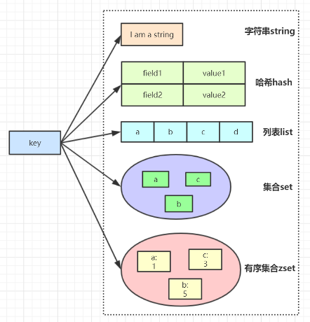
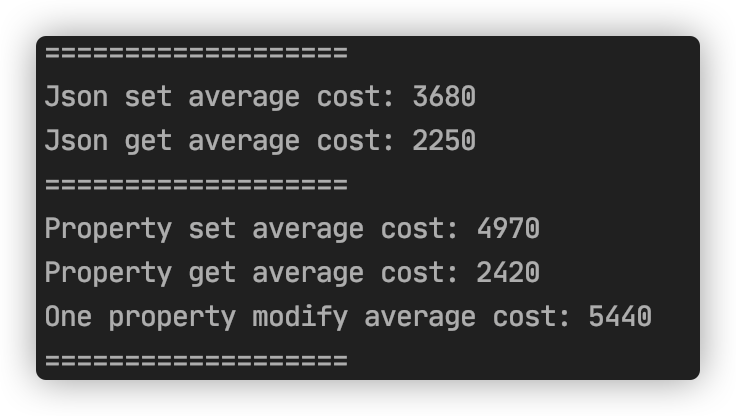
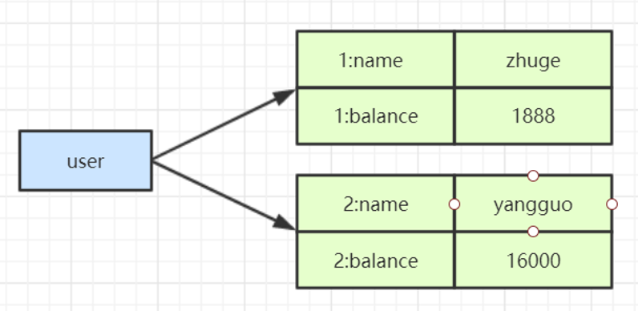
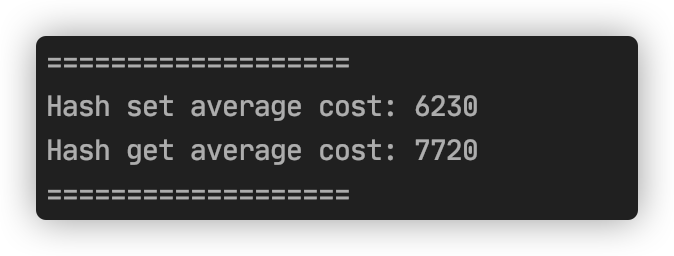
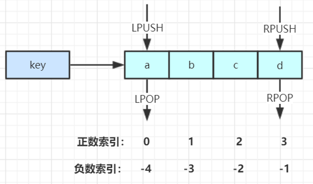
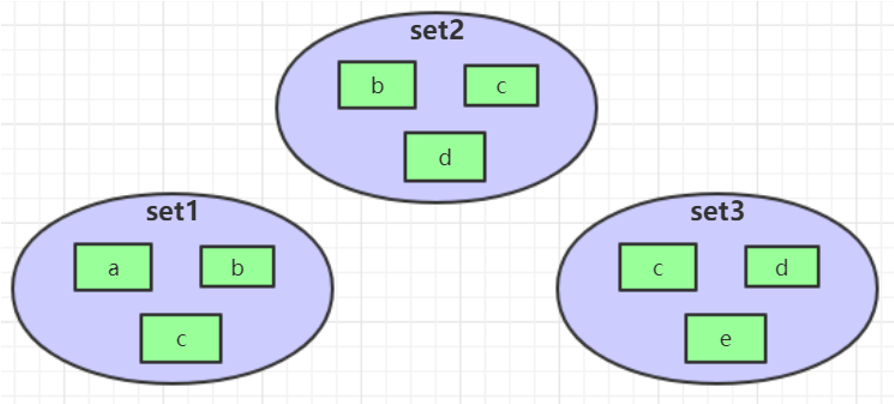
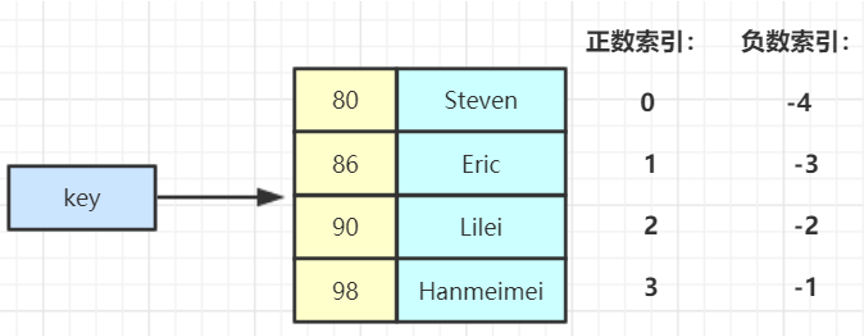
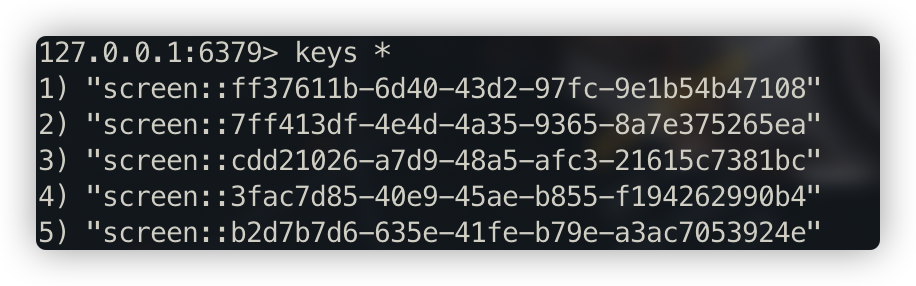
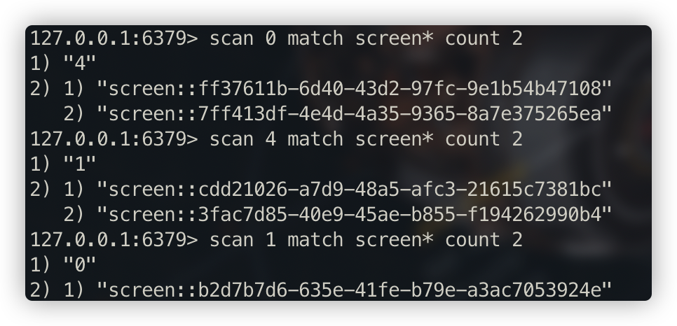

<!DOCTYPE HTML>
<html lang="zh-hans" >
    <head>
        <meta charset="UTF-8">
        <meta content="text/html; charset=utf-8" http-equiv="Content-Type">
        <title>5 Redis核心数据结构与核心原理 · 架构师学习笔记</title>
        <meta http-equiv="X-UA-Compatible" content="IE=edge" />
        <meta name="description" content="">
        <meta name="generator" content="GitBook 3.2.3">
        <meta name="author" content="Tyrival">
        
        
    
    <link rel="stylesheet" href="../../gitbook/style.css">

    
            
                
                <link rel="stylesheet" href="../../gitbook/gitbook-plugin-splitter/splitter.css">
                
            
                
                <link rel="stylesheet" href="../../gitbook/gitbook-plugin-expandable-chapters-small/expandable-chapters-small.css">
                
            
                
                <link rel="stylesheet" href="../../gitbook/gitbook-plugin-anchors/plugin.css">
                
            
                
                <link rel="stylesheet" href="../../gitbook/gitbook-plugin-anchor-navigation-ex/style/plugin.css">
                
            
                
                <link rel="stylesheet" href="../../gitbook/gitbook-plugin-highlight/website.css">
                
            
                
                <link rel="stylesheet" href="../../gitbook/gitbook-plugin-search/search.css">
                
            
                
                <link rel="stylesheet" href="../../gitbook/gitbook-plugin-fontsettings/website.css">
                
            
        

    

    
        
        <link rel="stylesheet" href="../../styles/website.css">
        
    

        
    
    
    
    <meta name="HandheldFriendly" content="true"/>
    <meta name="viewport" content="width=device-width, initial-scale=1, user-scalable=no">
    <meta name="apple-mobile-web-app-capable" content="yes">
    <meta name="apple-mobile-web-app-status-bar-style" content="black">
    <link rel="apple-touch-icon-precomposed" sizes="152x152" href="../../gitbook/images/apple-touch-icon-precomposed-152.png">
    <link rel="shortcut icon" href="../../gitbook/images/favicon.ico" type="image/x-icon">

    
    <link rel="next" href="06-Redis-Persistent-Distributed-Mode.html" />
    
    
    <link rel="prev" href="01-Zookeeper-Node.html" />
    

    <style>
    @media only screen and (max-width: 640px) {
        .book-header .hidden-mobile {
            display: none;
        }
    }
    </style>
    <script>
        window["gitbook-plugin-github-buttons"] = {"buttons":[{"user":"Tyrival","repo":"gitbook","type":"star","size":"small","count":false}]};
    </script>

    </head>
    <body>
        
<div class="book">
    <div class="book-summary">
        
            
<div id="book-search-input" role="search">
    <input type="text" placeholder="输入并搜索" />
</div>

            
                <nav role="navigation">
                


<ul class="summary">
    
    

    

    
        
        
    
        <li class="chapter " data-level="1.1" data-path="../../">
            
                <a href="../../">
            
                    
                    架构师学习笔记
            
                </a>
            

            
            <ul class="articles">
                
    
        <li class="chapter " data-level="1.1.1" data-path="../../01-JVM/">
            
                <a href="../../01-JVM/">
            
                    
                    第1章 JVM
            
                </a>
            

            
            <ul class="articles">
                
    
        <li class="chapter " data-level="1.1.1.1" data-path="../../01-JVM/01-ClassLoader.html">
            
                <a href="../../01-JVM/01-ClassLoader.html">
            
                    
                    1 类加载机制
            
                </a>
            

            
        </li>
    
        <li class="chapter " data-level="1.1.1.2" data-path="../../01-JVM/02-JVM-Structure-Resolve.html">
            
                <a href="../../01-JVM/02-JVM-Structure-Resolve.html">
            
                    
                    2 JVM整体结构
            
                </a>
            

            
        </li>
    
        <li class="chapter " data-level="1.1.1.3" data-path="../../01-JVM/03-Memory-Allocation-Mechanism.html">
            
                <a href="../../01-JVM/03-Memory-Allocation-Mechanism.html">
            
                    
                    3 JVM内存分配机制
            
                </a>
            

            
        </li>
    
        <li class="chapter " data-level="1.1.1.4" data-path="../../01-JVM/04-JVM-Bytecode-File-Structure.html">
            
                <a href="../../01-JVM/04-JVM-Bytecode-File-Structure.html">
            
                    
                    4 JVM字节码文件结构
            
                </a>
            

            
        </li>
    
        <li class="chapter " data-level="1.1.1.5" data-path="../../01-JVM/05-GC-ParNew-CMS.html">
            
                <a href="../../01-JVM/05-GC-ParNew-CMS.html">
            
                    
                    5 垃圾收集器ParNew和CMS
            
                </a>
            

            
        </li>
    
        <li class="chapter " data-level="1.1.1.6" data-path="../../01-JVM/06-GC-G1-ZGC.html">
            
                <a href="../../01-JVM/06-GC-G1-ZGC.html">
            
                    
                    6 垃圾收集器G1和ZGC
            
                </a>
            

            
        </li>
    
        <li class="chapter " data-level="1.1.1.7" data-path="../../01-JVM/07-GC-Optimize-01.html">
            
                <a href="../../01-JVM/07-GC-Optimize-01.html">
            
                    
                    7 GC调优（一）
            
                </a>
            

            
        </li>
    
        <li class="chapter " data-level="1.1.1.8" data-path="../../01-JVM/08-GC-Optimize-02.html">
            
                <a href="../../01-JVM/08-GC-Optimize-02.html">
            
                    
                    8 GC调优（二）
            
                </a>
            

            
        </li>
    
        <li class="chapter " data-level="1.1.1.9" data-path="../../01-JVM/JVM-Command.html">
            
                <a href="../../01-JVM/JVM-Command.html">
            
                    
                    附1 JVM指令手册
            
                </a>
            

            
        </li>
    

            </ul>
            
        </li>
    
        <li class="chapter " data-level="1.1.2" data-path="../../02-Tomcat/">
            
                <a href="../../02-Tomcat/">
            
                    
                    第2章 Tomcat
            
                </a>
            

            
            <ul class="articles">
                
    
        <li class="chapter " data-level="1.1.2.1" data-path="../../02-Tomcat/01-Tomcat-Summary.html">
            
                <a href="../../02-Tomcat/01-Tomcat-Summary.html">
            
                    
                    1 Tomcat生产环境应用
            
                </a>
            

            
        </li>
    
        <li class="chapter " data-level="1.1.2.2" data-path="../../02-Tomcat/02-Tomcat-Component-Src.html">
            
                <a href="../../02-Tomcat/02-Tomcat-Component-Src.html">
            
                    
                    2 Tomcat核心组件源码
            
                </a>
            

            
        </li>
    
        <li class="chapter " data-level="1.1.2.3" data-path="../../02-Tomcat/03-Tomcat-Http-Process.html">
            
                <a href="../../02-Tomcat/03-Tomcat-Http-Process.html">
            
                    
                    3 Tomcat线程模型HTTP请求处理与管道线模型
            
                </a>
            

            
        </li>
    
        <li class="chapter " data-level="1.1.2.4" data-path="../../02-Tomcat/04-Tomcat-Hot-Deployment-Load.html">
            
                <a href="../../02-Tomcat/04-Tomcat-Hot-Deployment-Load.html">
            
                    
                    4 Tomcat热部署和热加载
            
                </a>
            

            
        </li>
    

            </ul>
            
        </li>
    
        <li class="chapter " data-level="1.1.3" data-path="../../03-MySQL/">
            
                <a href="../../03-MySQL/">
            
                    
                    第3章 MySQL
            
                </a>
            

            
            <ul class="articles">
                
    
        <li class="chapter " data-level="1.1.3.1" data-path="../../03-MySQL/01-Mysql-index-data-structure.html">
            
                <a href="../../03-MySQL/01-Mysql-index-data-structure.html">
            
                    
                    1 Mysql索引数据结构
            
                </a>
            

            
        </li>
    
        <li class="chapter " data-level="1.1.3.2" data-path="../../03-MySQL/02-Explain-Index-Actual.html">
            
                <a href="../../03-MySQL/02-Explain-Index-Actual.html">
            
                    
                    2 Explain详解与索引最佳实践
            
                </a>
            

            
        </li>
    
        <li class="chapter " data-level="1.1.3.3" data-path="../../03-MySQL/03-Sql-Execution-Fundamental.html">
            
                <a href="../../03-MySQL/03-Sql-Execution-Fundamental.html">
            
                    
                    3 SQL底层执行原理
            
                </a>
            

            
        </li>
    
        <li class="chapter " data-level="1.1.3.4" data-path="../../03-MySQL/04-Sql-Optimize-01.html">
            
                <a href="../../03-MySQL/04-Sql-Optimize-01.html">
            
                    
                    4 SQL优化实战（一）
            
                </a>
            

            
        </li>
    
        <li class="chapter " data-level="1.1.3.5" data-path="../../03-MySQL/05-Sql-Optimize-02.html">
            
                <a href="../../03-MySQL/05-Sql-Optimize-02.html">
            
                    
                    5 SQL优化实战（二）
            
                </a>
            

            
        </li>
    
        <li class="chapter " data-level="1.1.3.6" data-path="../../03-MySQL/06-Mysql-Lock-Transaction-Isolation.html">
            
                <a href="../../03-MySQL/06-Mysql-Lock-Transaction-Isolation.html">
            
                    
                    6 Mysql锁与事务隔离级别
            
                </a>
            

            
        </li>
    
        <li class="chapter " data-level="1.1.3.7" data-path="../../03-MySQL/Slow-Sql-Query.html">
            
                <a href="../../03-MySQL/Slow-Sql-Query.html">
            
                    
                    附1 慢SQL查询
            
                </a>
            

            
        </li>
    
        <li class="chapter " data-level="1.1.3.8" data-path="../../03-MySQL/Ali-Java-Explain.html">
            
                <a href="../../03-MySQL/Ali-Java-Explain.html">
            
                    
                    附2 阿里巴巴手册（泰山版）解读-MySQL数据库
            
                </a>
            

            
        </li>
    

            </ul>
            
        </li>
    
        <li class="chapter " data-level="1.1.4" data-path="../../04-Concurrent/">
            
                <a href="../../04-Concurrent/">
            
                    
                    第4章 并发编程
            
                </a>
            

            
            <ul class="articles">
                
    
        <li class="chapter " data-level="1.1.4.1" data-path="../../04-Concurrent/01-JMM-JSR133.html">
            
                <a href="../../04-Concurrent/01-JMM-JSR133.html">
            
                    
                    1 并发编程之JMM & JSR133规范解读
            
                </a>
            

            
        </li>
    
        <li class="chapter " data-level="1.1.4.2" data-path="../../04-Concurrent/02-JMM-Features.html">
            
                <a href="../../04-Concurrent/02-JMM-Features.html">
            
                    
                    2 并发编程之JMM三大特性详解
            
                </a>
            

            
        </li>
    
        <li class="chapter " data-level="1.1.4.3" data-path="../../04-Concurrent/03-MESI-Cache-Coherency-Protocol.html">
            
                <a href="../../04-Concurrent/03-MESI-Cache-Coherency-Protocol.html">
            
                    
                    3 MESI缓存一致协议详解
            
                </a>
            

            
        </li>
    
        <li class="chapter " data-level="1.1.4.4" data-path="../../04-Concurrent/04-Synchronized.html">
            
                <a href="../../04-Concurrent/04-Synchronized.html">
            
                    
                    4 并发编程之synchronized详解
            
                </a>
            

            
        </li>
    
        <li class="chapter " data-level="1.1.4.5" data-path="../../04-Concurrent/05-AQS-Lock.html">
            
                <a href="../../04-Concurrent/05-AQS-Lock.html">
            
                    
                    5 抽象队列同步器AQS应用Lock详解
            
                </a>
            

            
        </li>
    
        <li class="chapter " data-level="1.1.4.6" data-path="../../04-Concurrent/06-AQS-Blocking-Queue.html">
            
                <a href="../../04-Concurrent/06-AQS-Blocking-Queue.html">
            
                    
                    6 抽象队列同步器AQS应用之BlockingQueue详解
            
                </a>
            

            
        </li>
    
        <li class="chapter " data-level="1.1.4.7" data-path="../../04-Concurrent/07-Tools-CountDownLatch-Semaphore.html">
            
                <a href="../../04-Concurrent/07-Tools-CountDownLatch-Semaphore.html">
            
                    
                    7 并发编程之Tools&CountDownLatch&Semaphore原理与应用
            
                </a>
            

            
        </li>
    
        <li class="chapter " data-level="1.1.4.8" data-path="../../04-Concurrent/08-Atomic-Unsafe-Magic-Class.html">
            
                <a href="../../04-Concurrent/08-Atomic-Unsafe-Magic-Class.html">
            
                    
                    8 并发编程之Atomic&Unsafe魔法类详解
            
                </a>
            

            
        </li>
    
        <li class="chapter " data-level="1.1.4.9" data-path="../../04-Concurrent/09-Collections-Map-List-Set.html">
            
                <a href="../../04-Concurrent/09-Collections-Map-List-Set.html">
            
                    
                    9 Collections之Map&List&Set详解
            
                </a>
            

            
        </li>
    
        <li class="chapter " data-level="1.1.4.10" data-path="../../04-Concurrent/10-Executor-Thread-Pool.html">
            
                <a href="../../04-Concurrent/10-Executor-Thread-Pool.html">
            
                    
                    10 Executor线程池原理与源码
            
                </a>
            

            
        </li>
    
        <li class="chapter " data-level="1.1.4.11" data-path="../../04-Concurrent/11-Schedule-Task-Thread-Pool.html">
            
                <a href="../../04-Concurrent/11-Schedule-Task-Thread-Pool.html">
            
                    
                    11 并发编程之定时任务&定时线程池
            
                </a>
            

            
        </li>
    
        <li class="chapter " data-level="1.1.4.12" data-path="../../04-Concurrent/12-Future-ForkJoin.html">
            
                <a href="../../04-Concurrent/12-Future-ForkJoin.html">
            
                    
                    12 并发编程之Future&ForkJoin框架原理分析
            
                </a>
            

            
        </li>
    
        <li class="chapter " data-level="1.1.4.13" data-path="../../04-Concurrent/13-Disruptor.html">
            
                <a href="../../04-Concurrent/13-Disruptor.html">
            
                    
                    13 无锁并发框架Disruptor
            
                </a>
            

            
        </li>
    

            </ul>
            
        </li>
    
        <li class="chapter " data-level="1.1.5" data-path="../../05-Source/">
            
                <a href="../../05-Source/">
            
                    
                    第5章 源码框架
            
                </a>
            

            
        </li>
    
        <li class="chapter " data-level="1.1.6" data-path="../">
            
                <a href="../">
            
                    
                    第6章 分布式
            
                </a>
            

            
            <ul class="articles">
                
    
        <li class="chapter " data-level="1.1.6.1" data-path="01-Zookeeper-Node.html">
            
                <a href="01-Zookeeper-Node.html">
            
                    
                    1 Zookeeper特性与节点说明
            
                </a>
            

            
        </li>
    
        <li class="chapter active" data-level="1.1.6.2" data-path="05-Redis-Data-Structure.html">
            
                <a href="05-Redis-Data-Structure.html">
            
                    
                    5 Redis核心数据结构与核心原理
            
                </a>
            

            
        </li>
    
        <li class="chapter " data-level="1.1.6.3" data-path="06-Redis-Persistent-Distributed-Mode.html">
            
                <a href="06-Redis-Persistent-Distributed-Mode.html">
            
                    
                    6 Redis持久化、主从与哨兵架构详解
            
                </a>
            

            
        </li>
    
        <li class="chapter " data-level="1.1.6.4" data-path="07-Redis-Cluster-Mode.html">
            
                <a href="07-Redis-Cluster-Mode.html">
            
                    
                    7 Redis高可用集群
            
                </a>
            

            
        </li>
    
        <li class="chapter " data-level="1.1.6.5" data-path="08-Redis-Distributed-Lock-Training.html">
            
                <a href="08-Redis-Distributed-Lock-Training.html">
            
                    
                    8 Redis高并发分布式锁实战
            
                </a>
            

            
        </li>
    
        <li class="chapter " data-level="1.1.6.6" data-path="09-Redis-Design-Optimize.html">
            
                <a href="09-Redis-Design-Optimize.html">
            
                    
                    9 Redis缓存设计与性能优化
            
                </a>
            

            
        </li>
    
        <li class="chapter " data-level="1.1.6.7" data-path="10-Nginx-Core-Config.html">
            
                <a href="10-Nginx-Core-Config.html">
            
                    
                    10 Nginx核心模块与配置实践
            
                </a>
            

            
        </li>
    
        <li class="chapter " data-level="1.1.6.8" data-path="11-Nginx-Optimize-Training.html">
            
                <a href="11-Nginx-Optimize-Training.html">
            
                    
                    11 Nginx性能优化实践
            
                </a>
            

            
        </li>
    
        <li class="chapter " data-level="1.1.6.9" data-path="12-MongoDB-Quick-Start.html">
            
                <a href="12-MongoDB-Quick-Start.html">
            
                    
                    12 MongoDB的逻辑组成
            
                </a>
            

            
        </li>
    
        <li class="chapter " data-level="1.1.6.10" data-path="13-MongoDB-Cluster-Advanced-Feature.html">
            
                <a href="13-MongoDB-Cluster-Advanced-Feature.html">
            
                    
                    13 MongoDB集群架构与高级特性
            
                </a>
            

            
        </li>
    
        <li class="chapter " data-level="1.1.6.11" data-path="14-MongoDB-Training.html">
            
                <a href="14-MongoDB-Training.html">
            
                    
                    14 MongoDB企业应用实战
            
                </a>
            

            
        </li>
    
        <li class="chapter " data-level="1.1.6.12" data-path="15-Java-BIO-NIO-AIO.html">
            
                <a href="15-Java-BIO-NIO-AIO.html">
            
                    
                    15 Java BIO & NIO & AIO
            
                </a>
            

            
        </li>
    
        <li class="chapter " data-level="1.1.6.13" data-path="16-Netty-Core-Thread-Model.html">
            
                <a href="16-Netty-Core-Thread-Model.html">
            
                    
                    16 Netty核心功能与线程模型
            
                </a>
            

            
        </li>
    
        <li class="chapter " data-level="1.1.6.14" data-path="17-Netty-Codec-Pack-Unpack-Zero-Copy.html">
            
                <a href="17-Netty-Codec-Pack-Unpack-Zero-Copy.html">
            
                    
                    17 Netty编解码，粘包拆包及零拷贝
            
                </a>
            

            
        </li>
    
        <li class="chapter " data-level="1.1.6.15" data-path="18-Netty-Thread-Model-Source.html">
            
                <a href="18-Netty-Thread-Model-Source.html">
            
                    
                    18 Netty线程模型源码详解
            
                </a>
            

            
        </li>
    
        <li class="chapter " data-level="1.1.6.16" data-path="19-Netty-Barrage-Dubbo.html">
            
                <a href="19-Netty-Barrage-Dubbo.html">
            
                    
                    19 Netty在弹幕系统与Dubbo框架中的应用
            
                </a>
            

            
        </li>
    
        <li class="chapter " data-level="1.1.6.17" data-path="20-Kafka-Cluster.html">
            
                <a href="20-Kafka-Cluster.html">
            
                    
                    20 Kafka集群搭建与使用
            
                </a>
            

            
        </li>
    
        <li class="chapter " data-level="1.1.6.18" data-path="21-Kafka-Architecture.html">
            
                <a href="21-Kafka-Architecture.html">
            
                    
                    21 Kafka设计原理详解
            
                </a>
            

            
        </li>
    
        <li class="chapter " data-level="1.1.6.19" data-path="22-Kafka-Optimizer-Training.html">
            
                <a href="22-Kafka-Optimizer-Training.html">
            
                    
                    22 Kafka性能优化实战
            
                </a>
            

            
        </li>
    

            </ul>
            
        </li>
    
        <li class="chapter " data-level="1.1.7" data-path="../../07-Microservice/">
            
                <a href="../../07-Microservice/">
            
                    
                    第7章 微服务
            
                </a>
            

            
        </li>
    
        <li class="chapter " data-level="1.1.8" data-path="../../08-Training/">
            
                <a href="../../08-Training/">
            
                    
                    第8章 实战案例
            
                </a>
            

            
        </li>
    

            </ul>
            
        </li>
    

    

    <li class="divider"></li>

    <li>
        <a href="https://www.gitbook.com" target="blank" class="gitbook-link">
            本书使用 GitBook 发布
        </a>
    </li>
</ul>


                </nav>
            
        
    </div>

    <div class="book-body">
        
            <div class="body-inner">
                
                    

<div class="book-header" role="navigation">
    

    <!-- Title -->
    <h1>
        <i class="fa fa-circle-o-notch fa-spin"></i>
        <a href="../.." >5 Redis核心数据结构与核心原理</a>
    </h1>
</div>


                    <div class="page-wrapper" tabindex="-1" role="main">
                        <div class="page-inner">
                            
<div id="book-search-results">
    <div class="search-noresults">
    
                                <section class="normal markdown-section">
                                
                                <div id="anchor-navigation-ex-navbar"><i class="fa fa-navicon"></i><ul><li><span class="title-icon "></span><a href="#redis&#x6838;&#x5FC3;&#x6570;&#x636E;&#x7ED3;&#x6784;&#x4E0E;&#x6838;&#x5FC3;&#x539F;&#x7406;"><b></b>Redis&#x6838;&#x5FC3;&#x6570;&#x636E;&#x7ED3;&#x6784;&#x4E0E;&#x6838;&#x5FC3;&#x539F;&#x7406;</a></li><ul><li><span class="title-icon "></span><a href="#1-redis&#x5B89;&#x88C5;"><b></b>1. Redis&#x5B89;&#x88C5;</a></li><li><span class="title-icon "></span><a href="#2-redis&#x7684;&#x5355;&#x7EBF;&#x7A0B;&#x548C;&#x9AD8;&#x6027;&#x80FD;"><b></b>2. Redis&#x7684;&#x5355;&#x7EBF;&#x7A0B;&#x548C;&#x9AD8;&#x6027;&#x80FD;</a></li><li><span class="title-icon "></span><a href="#3-redis&#x6570;&#x636E;&#x7ED3;&#x6784;&#x548C;&#x547D;&#x4EE4;"><b></b>3. Redis&#x6570;&#x636E;&#x7ED3;&#x6784;&#x548C;&#x547D;&#x4EE4;</a></li><ul><li><span class="title-icon "></span><a href="#31-&#x6570;&#x636E;&#x7ED3;&#x6784;"><b></b>3.1 &#x6570;&#x636E;&#x7ED3;&#x6784;</a></li><li><span class="title-icon "></span><a href="#32-&#x5176;&#x4ED6;&#x9AD8;&#x7EA7;&#x547D;&#x4EE4;"><b></b>3.2 &#x5176;&#x4ED6;&#x9AD8;&#x7EA7;&#x547D;&#x4EE4;</a></li></ul></ul></ul></div><a href="#redis&#x6838;&#x5FC3;&#x6570;&#x636E;&#x7ED3;&#x6784;&#x4E0E;&#x6838;&#x5FC3;&#x539F;&#x7406;" id="anchorNavigationExGoTop"><i class="fa fa-arrow-up"></i></a><h1 id="redis&#x6838;&#x5FC3;&#x6570;&#x636E;&#x7ED3;&#x6784;&#x4E0E;&#x6838;&#x5FC3;&#x539F;&#x7406;"><a name="redis&#x6838;&#x5FC3;&#x6570;&#x636E;&#x7ED3;&#x6784;&#x4E0E;&#x6838;&#x5FC3;&#x539F;&#x7406;" class="anchor-navigation-ex-anchor" href="#redis&#x6838;&#x5FC3;&#x6570;&#x636E;&#x7ED3;&#x6784;&#x4E0E;&#x6838;&#x5FC3;&#x539F;&#x7406;"><i class="fa fa-link" aria-hidden="true"></i></a><a name="redis&#x6838;&#x5FC3;&#x6570;&#x636E;&#x7ED3;&#x6784;&#x4E0E;&#x6838;&#x5FC3;&#x539F;&#x7406;" class="plugin-anchor" href="#redis&#x6838;&#x5FC3;&#x6570;&#x636E;&#x7ED3;&#x6784;&#x4E0E;&#x6838;&#x5FC3;&#x539F;&#x7406;"><i class="fa fa-link" aria-hidden="true"></i></a>Redis&#x6838;&#x5FC3;&#x6570;&#x636E;&#x7ED3;&#x6784;&#x4E0E;&#x6838;&#x5FC3;&#x539F;&#x7406;</h1>
<h2 id="1-redis&#x5B89;&#x88C5;"><a name="1-redis&#x5B89;&#x88C5;" class="anchor-navigation-ex-anchor" href="#1-redis&#x5B89;&#x88C5;"><i class="fa fa-link" aria-hidden="true"></i></a><a name="1-redis&#x5B89;&#x88C5;" class="plugin-anchor" href="#1-redis&#x5B89;&#x88C5;"><i class="fa fa-link" aria-hidden="true"></i></a>1. Redis&#x5B89;&#x88C5;</h2>
<pre><code class="lang-bash">&#x4E0B;&#x8F7D;&#x5730;&#x5740;&#xFF1A;http://redis.io/download
&#x5B89;&#x88C5;&#x6B65;&#x9AA4;&#xFF1A;
<span class="hljs-comment"># &#x5B89;&#x88C5;gcc</span>
yum install gcc

<span class="hljs-comment"># &#x628A;&#x4E0B;&#x8F7D;&#x597D;&#x7684;redis-5.0.3.tar.gz&#x653E;&#x5728;/usr/local&#x6587;&#x4EF6;&#x5939;&#x4E0B;&#xFF0C;&#x5E76;&#x89E3;&#x538B;</span>
wget http://download.redis.io/releases/redis-5.0.3.tar.gz
tar xzf redis-5.0.3.tar.gz
<span class="hljs-built_in">cd</span> redis-5.0.3

<span class="hljs-comment"># &#x8FDB;&#x5165;&#x5230;&#x89E3;&#x538B;&#x597D;&#x7684;redis-5.0.3&#x76EE;&#x5F55;&#x4E0B;&#xFF0C;&#x8FDB;&#x884C;&#x7F16;&#x8BD1;&#x4E0E;&#x5B89;&#x88C5;</span>
make

<span class="hljs-comment"># &#x542F;&#x52A8;&#x5E76;&#x6307;&#x5B9A;&#x914D;&#x7F6E;&#x6587;&#x4EF6;</span>
src/redis-server redis.conf&#xFF08;&#x6CE8;&#x610F;&#x8981;&#x4F7F;&#x7528;&#x540E;&#x53F0;&#x542F;&#x52A8;&#xFF0C;&#x6240;&#x4EE5;&#x4FEE;&#x6539;redis.conf&#x91CC;&#x7684;daemonize&#x6539;&#x4E3A;yes)

<span class="hljs-comment"># &#x9A8C;&#x8BC1;&#x542F;&#x52A8;&#x662F;&#x5426;&#x6210;&#x529F; </span>
ps -ef | grep redis 

<span class="hljs-comment"># &#x8FDB;&#x5165;redis&#x5BA2;&#x6237;&#x7AEF; </span>
src/redis-cli 

<span class="hljs-comment"># &#x9000;&#x51FA;&#x5BA2;&#x6237;&#x7AEF;</span>
quit

<span class="hljs-comment"># &#x9000;&#x51FA;redis&#x670D;&#x52A1;&#xFF1A; </span>
&#xFF08;1&#xFF09;pkill redis-server 
&#xFF08;2&#xFF09;<span class="hljs-built_in">kill</span> &#x8FDB;&#x7A0B;&#x53F7;                       
&#xFF08;3&#xFF09;src/redis-cli shutdown
</code></pre>
<h2 id="2-redis&#x7684;&#x5355;&#x7EBF;&#x7A0B;&#x548C;&#x9AD8;&#x6027;&#x80FD;"><a name="2-redis&#x7684;&#x5355;&#x7EBF;&#x7A0B;&#x548C;&#x9AD8;&#x6027;&#x80FD;" class="anchor-navigation-ex-anchor" href="#2-redis&#x7684;&#x5355;&#x7EBF;&#x7A0B;&#x548C;&#x9AD8;&#x6027;&#x80FD;"><i class="fa fa-link" aria-hidden="true"></i></a><a name="2-redis&#x7684;&#x5355;&#x7EBF;&#x7A0B;&#x548C;&#x9AD8;&#x6027;&#x80FD;" class="plugin-anchor" href="#2-redis&#x7684;&#x5355;&#x7EBF;&#x7A0B;&#x548C;&#x9AD8;&#x6027;&#x80FD;"><i class="fa fa-link" aria-hidden="true"></i></a>2. Redis&#x7684;&#x5355;&#x7EBF;&#x7A0B;&#x548C;&#x9AD8;&#x6027;&#x80FD;</h2>
<h5 id="redis-&#x5355;&#x7EBF;&#x7A0B;&#x4E3A;&#x4EC0;&#x4E48;&#x8FD8;&#x80FD;&#x8FD9;&#x4E48;&#x5FEB;&#xFF1F;"><a name="redis-&#x5355;&#x7EBF;&#x7A0B;&#x4E3A;&#x4EC0;&#x4E48;&#x8FD8;&#x80FD;&#x8FD9;&#x4E48;&#x5FEB;&#xFF1F;" class="anchor-navigation-ex-anchor" href="#redis-&#x5355;&#x7EBF;&#x7A0B;&#x4E3A;&#x4EC0;&#x4E48;&#x8FD8;&#x80FD;&#x8FD9;&#x4E48;&#x5FEB;&#xFF1F;"><i class="fa fa-link" aria-hidden="true"></i></a><a name="redis-&#x5355;&#x7EBF;&#x7A0B;&#x4E3A;&#x4EC0;&#x4E48;&#x8FD8;&#x80FD;&#x8FD9;&#x4E48;&#x5FEB;&#xFF1F;" class="plugin-anchor" href="#redis-&#x5355;&#x7EBF;&#x7A0B;&#x4E3A;&#x4EC0;&#x4E48;&#x8FD8;&#x80FD;&#x8FD9;&#x4E48;&#x5FEB;&#xFF1F;"><i class="fa fa-link" aria-hidden="true"></i></a>Redis &#x5355;&#x7EBF;&#x7A0B;&#x4E3A;&#x4EC0;&#x4E48;&#x8FD8;&#x80FD;&#x8FD9;&#x4E48;&#x5FEB;&#xFF1F;</h5>
<p>&#x56E0;&#x4E3A;&#x5B83;&#x6240;&#x6709;&#x7684;&#x6570;&#x636E;&#x90FD;&#x5728;<strong>&#x5185;&#x5B58;</strong>&#x4E2D;&#xFF0C;&#x6240;&#x6709;&#x7684;&#x8FD0;&#x7B97;&#x90FD;&#x662F;&#x5185;&#x5B58;&#x7EA7;&#x522B;&#x7684;&#x8FD0;&#x7B97;&#xFF0C;&#x800C;&#x4E14;&#x5355;&#x7EBF;&#x7A0B;&#x907F;&#x514D;&#x4E86;&#x591A;&#x7EBF;&#x7A0B;&#x7684;&#x5207;&#x6362;&#x6027;&#x80FD;&#x635F;&#x8017;&#x95EE;&#x9898;&#x3002;&#x6B63;&#x56E0;&#x4E3A; Redis &#x662F;&#x5355;&#x7EBF;&#x7A0B;&#xFF0C;&#x6240;&#x4EE5;&#x8981;&#x5C0F;&#x5FC3;&#x4F7F;&#x7528; Redis &#x6307;&#x4EE4;&#xFF0C;&#x5BF9;&#x4E8E;&#x90A3;&#x4E9B;&#x8017;&#x65F6;&#x7684;&#x6307;&#x4EE4;(&#x6BD4;&#x5982;keys)&#xFF0C;&#x4E00;&#x5B9A;&#x8981;&#x8C28;&#x614E;&#x4F7F;&#x7528;&#xFF0C;&#x4E00;&#x4E0D;&#x5C0F;&#x5FC3;&#x5C31;&#x53EF;&#x80FD;&#x4F1A;&#x5BFC;&#x81F4; Redis &#x5361;&#x987F;&#x3002; </p>
<h5 id="redis-&#x5355;&#x7EBF;&#x7A0B;&#x5982;&#x4F55;&#x5904;&#x7406;&#x90A3;&#x4E48;&#x591A;&#x7684;&#x5E76;&#x53D1;&#x5BA2;&#x6237;&#x7AEF;&#x8FDE;&#x63A5;&#xFF1F;"><a name="redis-&#x5355;&#x7EBF;&#x7A0B;&#x5982;&#x4F55;&#x5904;&#x7406;&#x90A3;&#x4E48;&#x591A;&#x7684;&#x5E76;&#x53D1;&#x5BA2;&#x6237;&#x7AEF;&#x8FDE;&#x63A5;&#xFF1F;" class="anchor-navigation-ex-anchor" href="#redis-&#x5355;&#x7EBF;&#x7A0B;&#x5982;&#x4F55;&#x5904;&#x7406;&#x90A3;&#x4E48;&#x591A;&#x7684;&#x5E76;&#x53D1;&#x5BA2;&#x6237;&#x7AEF;&#x8FDE;&#x63A5;&#xFF1F;"><i class="fa fa-link" aria-hidden="true"></i></a><a name="redis-&#x5355;&#x7EBF;&#x7A0B;&#x5982;&#x4F55;&#x5904;&#x7406;&#x90A3;&#x4E48;&#x591A;&#x7684;&#x5E76;&#x53D1;&#x5BA2;&#x6237;&#x7AEF;&#x8FDE;&#x63A5;&#xFF1F;" class="plugin-anchor" href="#redis-&#x5355;&#x7EBF;&#x7A0B;&#x5982;&#x4F55;&#x5904;&#x7406;&#x90A3;&#x4E48;&#x591A;&#x7684;&#x5E76;&#x53D1;&#x5BA2;&#x6237;&#x7AEF;&#x8FDE;&#x63A5;&#xFF1F;"><i class="fa fa-link" aria-hidden="true"></i></a>Redis &#x5355;&#x7EBF;&#x7A0B;&#x5982;&#x4F55;&#x5904;&#x7406;&#x90A3;&#x4E48;&#x591A;&#x7684;&#x5E76;&#x53D1;&#x5BA2;&#x6237;&#x7AEF;&#x8FDE;&#x63A5;&#xFF1F;</h5>
<p>Redis&#x7684;<strong>IO&#x591A;&#x8DEF;&#x590D;&#x7528;</strong>&#xFF1A;redis&#x5229;&#x7528;epoll&#x6765;&#x5B9E;&#x73B0;IO&#x591A;&#x8DEF;&#x590D;&#x7528;&#xFF0C;&#x5C06;&#x8FDE;&#x63A5;&#x4FE1;&#x606F;&#x548C;&#x4E8B;&#x4EF6;&#x653E;&#x5230;&#x961F;&#x5217;&#x4E2D;&#xFF0C;&#x4F9D;&#x6B21;&#x653E;&#x5230;&#x6587;&#x4EF6;&#x4E8B;&#x4EF6;&#x5206;&#x6D3E;&#x5668;&#xFF0C;&#x4E8B;&#x4EF6;&#x5206;&#x6D3E;&#x5668;&#x5C06;&#x4E8B;&#x4EF6;&#x5206;&#x53D1;&#x7ED9;&#x4E8B;&#x4EF6;&#x5904;&#x7406;&#x5668;&#x3002;</p>
<p></p>
<pre><code class="lang-bash"><span class="hljs-comment"># &#x67E5;&#x770B;redis&#x652F;&#x6301;&#x7684;&#x6700;&#x5927;&#x8FDE;&#x63A5;&#x6570;&#xFF0C;</span>
<span class="hljs-comment"># &#x5728;redis.conf&#x6587;&#x4EF6;&#x4E2D;&#x53EF;&#x4FEE;&#x6539;&#xFF0C;# maxclients 10000</span>
127.0.0.1:6379&gt; CONFIG GET maxclients
1) <span class="hljs-string">&quot;maxclients&quot;</span>
2) <span class="hljs-string">&quot;10000&quot;</span>
</code></pre>
<h2 id="3-redis&#x6570;&#x636E;&#x7ED3;&#x6784;&#x548C;&#x547D;&#x4EE4;"><a name="3-redis&#x6570;&#x636E;&#x7ED3;&#x6784;&#x548C;&#x547D;&#x4EE4;" class="anchor-navigation-ex-anchor" href="#3-redis&#x6570;&#x636E;&#x7ED3;&#x6784;&#x548C;&#x547D;&#x4EE4;"><i class="fa fa-link" aria-hidden="true"></i></a><a name="3-redis&#x6570;&#x636E;&#x7ED3;&#x6784;&#x548C;&#x547D;&#x4EE4;" class="plugin-anchor" href="#3-redis&#x6570;&#x636E;&#x7ED3;&#x6784;&#x548C;&#x547D;&#x4EE4;"><i class="fa fa-link" aria-hidden="true"></i></a>3. Redis&#x6570;&#x636E;&#x7ED3;&#x6784;&#x548C;&#x547D;&#x4EE4;</h2>
<h3 id="31-&#x6570;&#x636E;&#x7ED3;&#x6784;"><a name="31-&#x6570;&#x636E;&#x7ED3;&#x6784;" class="anchor-navigation-ex-anchor" href="#31-&#x6570;&#x636E;&#x7ED3;&#x6784;"><i class="fa fa-link" aria-hidden="true"></i></a><a name="31-&#x6570;&#x636E;&#x7ED3;&#x6784;" class="plugin-anchor" href="#31-&#x6570;&#x636E;&#x7ED3;&#x6784;"><i class="fa fa-link" aria-hidden="true"></i></a>3.1 &#x6570;&#x636E;&#x7ED3;&#x6784;</h3>
<p>Redis&#x4E3B;&#x8981;&#x5305;&#x542B;&#x4EE5;&#x4E0B;&#x6570;&#x636E;&#x7ED3;&#x6784;&#xFF1A;</p>
<p></p>
<ul>
<li>&#x5B57;&#x7B26;&#x4E32;string</li>
<li>&#x54C8;&#x5E0C;hash</li>
<li>&#x5217;&#x8868;list</li>
<li>&#x96C6;&#x5408;set</li>
<li>&#x6709;&#x5E8F;&#x96C6;&#x5408;zset</li>
</ul>
<h4 id="&#x5B57;&#x7B26;&#x4E32;string"><a name="&#x5B57;&#x7B26;&#x4E32;string" class="anchor-navigation-ex-anchor" href="#&#x5B57;&#x7B26;&#x4E32;string"><i class="fa fa-link" aria-hidden="true"></i></a><a name="&#x5B57;&#x7B26;&#x4E32;string" class="plugin-anchor" href="#&#x5B57;&#x7B26;&#x4E32;string"><i class="fa fa-link" aria-hidden="true"></i></a>&#x5B57;&#x7B26;&#x4E32;string</h4>
<h6 id="&#x5B57;&#x7B26;&#x4E32;&#x5E38;&#x7528;&#x64CD;&#x4F5C;"><a name="&#x5B57;&#x7B26;&#x4E32;&#x5E38;&#x7528;&#x64CD;&#x4F5C;" class="anchor-navigation-ex-anchor" href="#&#x5B57;&#x7B26;&#x4E32;&#x5E38;&#x7528;&#x64CD;&#x4F5C;"><i class="fa fa-link" aria-hidden="true"></i></a><a name="&#x5B57;&#x7B26;&#x4E32;&#x5E38;&#x7528;&#x64CD;&#x4F5C;" class="plugin-anchor" href="#&#x5B57;&#x7B26;&#x4E32;&#x5E38;&#x7528;&#x64CD;&#x4F5C;"><i class="fa fa-link" aria-hidden="true"></i></a>&#x5B57;&#x7B26;&#x4E32;&#x5E38;&#x7528;&#x64CD;&#x4F5C;</h6>
<pre><code class="lang-bash"><span class="hljs-comment"># &#x5B58;&#x5165;&#x5B57;&#x7B26;&#x4E32;&#x952E;&#x503C;&#x5BF9;</span>
SET  key  value
<span class="hljs-comment"># &#x6279;&#x91CF;&#x5B58;&#x50A8;&#x5B57;&#x7B26;&#x4E32;&#x952E;&#x503C;&#x5BF9;</span>
MSET  key  value [key value ...]
<span class="hljs-comment"># &#x5B58;&#x5165;&#x4E00;&#x4E2A;&#x4E0D;&#x5B58;&#x5728;&#x7684;&#x5B57;&#x7B26;&#x4E32;&#x952E;&#x503C;&#x5BF9;</span>
SETNX  key  value
<span class="hljs-comment"># &#x83B7;&#x53D6;&#x4E00;&#x4E2A;&#x5B57;&#x7B26;&#x4E32;&#x952E;&#x503C;</span>
GET  key
<span class="hljs-comment"># &#x6279;&#x91CF;&#x83B7;&#x53D6;&#x5B57;&#x7B26;&#x4E32;&#x952E;&#x503C;</span>
MGET  key  [key ...]
<span class="hljs-comment"># &#x5220;&#x9664;&#x4E00;&#x4E2A;&#x952E;</span>
DEL  key  [key ...]
<span class="hljs-comment"># &#x8BBE;&#x7F6E;&#x4E00;&#x4E2A;&#x952E;&#x7684;&#x8FC7;&#x671F;&#x65F6;&#x95F4;(&#x79D2;)</span>
EXPIRE  key  seconds
</code></pre>
<h6 id="&#x539F;&#x5B50;&#x52A0;&#x51CF;"><a name="&#x539F;&#x5B50;&#x52A0;&#x51CF;" class="anchor-navigation-ex-anchor" href="#&#x539F;&#x5B50;&#x52A0;&#x51CF;"><i class="fa fa-link" aria-hidden="true"></i></a><a name="&#x539F;&#x5B50;&#x52A0;&#x51CF;" class="plugin-anchor" href="#&#x539F;&#x5B50;&#x52A0;&#x51CF;"><i class="fa fa-link" aria-hidden="true"></i></a>&#x539F;&#x5B50;&#x52A0;&#x51CF;</h6>
<pre><code class="lang-bash"><span class="hljs-comment"># &#x5C06;key&#x4E2D;&#x50A8;&#x5B58;&#x7684;&#x6570;&#x5B57;&#x503C;&#x52A0;1</span>
INCR  key
<span class="hljs-comment"># &#x5C06;key&#x4E2D;&#x50A8;&#x5B58;&#x7684;&#x6570;&#x5B57;&#x503C;&#x51CF;1</span>
DECR  key
<span class="hljs-comment"># &#x5C06;key&#x6240;&#x50A8;&#x5B58;&#x7684;&#x503C;&#x52A0;&#x4E0A;increment</span>
INCRBY  key  increment
<span class="hljs-comment"># &#x5C06;key&#x6240;&#x50A8;&#x5B58;&#x7684;&#x503C;&#x51CF;&#x53BB;decrement</span>
DECRBY  key  decrement
</code></pre>
<h6 id="&#x5355;&#x503C;&#x7F13;&#x5B58;"><a name="&#x5355;&#x503C;&#x7F13;&#x5B58;" class="anchor-navigation-ex-anchor" href="#&#x5355;&#x503C;&#x7F13;&#x5B58;"><i class="fa fa-link" aria-hidden="true"></i></a><a name="&#x5355;&#x503C;&#x7F13;&#x5B58;" class="plugin-anchor" href="#&#x5355;&#x503C;&#x7F13;&#x5B58;"><i class="fa fa-link" aria-hidden="true"></i></a>&#x5355;&#x503C;&#x7F13;&#x5B58;</h6>
<pre><code class="lang-bash">SET  key  value     
GET  key
</code></pre>
<h5 id="&#x5E94;&#x7528;&#x573A;&#x666F;"><a name="&#x5E94;&#x7528;&#x573A;&#x666F;" class="anchor-navigation-ex-anchor" href="#&#x5E94;&#x7528;&#x573A;&#x666F;"><i class="fa fa-link" aria-hidden="true"></i></a><a name="&#x5E94;&#x7528;&#x573A;&#x666F;" class="plugin-anchor" href="#&#x5E94;&#x7528;&#x573A;&#x666F;"><i class="fa fa-link" aria-hidden="true"></i></a>&#x5E94;&#x7528;&#x573A;&#x666F;</h5>
<h6 id="&#x5BF9;&#x8C61;&#x7F13;&#x5B58;"><a name="&#x5BF9;&#x8C61;&#x7F13;&#x5B58;" class="anchor-navigation-ex-anchor" href="#&#x5BF9;&#x8C61;&#x7F13;&#x5B58;"><i class="fa fa-link" aria-hidden="true"></i></a><a name="&#x5BF9;&#x8C61;&#x7F13;&#x5B58;" class="plugin-anchor" href="#&#x5BF9;&#x8C61;&#x7F13;&#x5B58;"><i class="fa fa-link" aria-hidden="true"></i></a>&#x5BF9;&#x8C61;&#x7F13;&#x5B58;</h6>
<ul>
<li>&#x65B9;&#x6848;A&#x3002;&#x5C06;&#x5BF9;&#x8C61;&#x8F6C;&#x6210;JSON&#x683C;&#x5F0F;&#xFF0C;&#x7136;&#x540E;&#x4EE5;&#x5B57;&#x7B26;&#x4E32;&#x7684;&#x5F62;&#x5F0F;&#x5B58;&#x5165;redis</li>
</ul>
<pre><code class="lang-json">SET  user:<span class="hljs-number">1</span>  value(json&#x683C;&#x5F0F;&#x6570;&#x636E;)
</code></pre>
<ul>
<li>&#x65B9;&#x6848;B&#x3002;&#x5C06;&#x5BF9;&#x8C61;&#x7684;&#x5404;&#x5C5E;&#x6027;&#x5206;&#x5F00;&#x5B58;&#x50A8;&#xFF0C;</li>
</ul>
<pre><code class="lang-bash">MSET  user:1:name  tyrival   user:1:balance  1888
MGET  user:1:name  user:1:balance
</code></pre>
<blockquote>
<p><strong>&#x6027;&#x80FD;&#x6D4B;&#x8BD5;</strong> <a href="https://github.com/tyrival/architect-knowledge/blob/master/06-distributed/src/main/java/com/tyrival/distributed/old/lesson05/RedisOpsController.java" target="_blank">&#x6E90;&#x7801;</a></p>
<p>SET&#xFF1A;&#x65B9;&#x6848;A&#x6027;&#x80FD;&#x9AD8;&#x4E8E;&#x65B9;&#x6848;B&#xFF0C;&#x56E0;&#x4E3A;&#x65B9;&#x6848;A&#x53EA;&#x9700;&#x8981;set&#x4E00;&#x4E2A;key&#xFF0C;&#x800C;&#x65B9;&#x6848;B&#x9700;&#x8981;&#x6839;&#x636E;&#x5C5E;&#x6027;&#x7684;&#x6570;&#x91CF;mset&#x591A;&#x4E2A;key&#xFF1B;&#x4F46;&#x662F;&#x5F53;&#x65B9;&#x6848;B&#x53EA;&#x9700;&#x8981;&#x4FEE;&#x6539;&#x4E00;&#x4E2A;&#x5C5E;&#x6027;&#x503C;&#x65F6;&#x5019;</p>
<p>GET&#xFF1A;&#x7ECF;&#x8FC7;&#x591A;&#x6B21;&#x6D4B;&#x8BD5;&#xFF0C;&#x4E8C;&#x8005;&#x6027;&#x80FD;&#x5DEE;&#x4E0D;&#x591A;</p>
<p></p>
</blockquote>
<h6 id="&#x5206;&#x5E03;&#x5F0F;&#x9501;"><a name="&#x5206;&#x5E03;&#x5F0F;&#x9501;" class="anchor-navigation-ex-anchor" href="#&#x5206;&#x5E03;&#x5F0F;&#x9501;"><i class="fa fa-link" aria-hidden="true"></i></a><a name="&#x5206;&#x5E03;&#x5F0F;&#x9501;" class="plugin-anchor" href="#&#x5206;&#x5E03;&#x5F0F;&#x9501;"><i class="fa fa-link" aria-hidden="true"></i></a>&#x5206;&#x5E03;&#x5F0F;&#x9501;</h6>
<pre><code class="lang-bash"><span class="hljs-comment"># &#x8FD4;&#x56DE;1&#x4EE3;&#x8868;&#x83B7;&#x53D6;&#x9501;&#x6210;&#x529F;</span>
SETNX  product:10001  <span class="hljs-literal">true</span>
<span class="hljs-comment"># &#x8FD4;&#x56DE;0&#x4EE3;&#x8868;&#x83B7;&#x53D6;&#x9501;&#x5931;&#x8D25;</span>
SETNX  product:10001  <span class="hljs-literal">true</span>

<span class="hljs-comment">###### &#x6267;&#x884C;&#x4E1A;&#x52A1;&#x64CD;&#x4F5C; ######</span>

<span class="hljs-comment"># &#x6267;&#x884C;&#x5B8C;&#x4E1A;&#x52A1;&#x91CA;&#x653E;&#x9501;</span>
DEL  product:10001
<span class="hljs-comment"># &#x9632;&#x6B62;&#x7A0B;&#x5E8F;&#x610F;&#x5916;&#x7EC8;&#x6B62;&#x5BFC;&#x81F4;&#x6B7B;&#x9501;</span>
SET product:10001 <span class="hljs-literal">true</span>  ex  10  nx
</code></pre>
<blockquote>
<p><strong>&#x6CE8;&#x610F;</strong></p>
<p>&#x8FD9;&#x53EA;&#x662F;&#x4E00;&#x4E2A;&#x7B80;&#x5355;&#x7684;&#x5206;&#x5E03;&#x5F0F;&#x9501;&#x793A;&#x610F;&#xFF0C;&#x5B9E;&#x9645;&#x4E0A;&#x771F;&#x6B63;&#x7684;&#x5206;&#x5E03;&#x5F0F;&#x9501;&#x5B9E;&#x73B0;&#x65B9;&#x5F0F;&#x6BD4;&#x8FD9;&#x4E2A;&#x590D;&#x6742;&#x7684;&#x591A;&#x3002;</p>
</blockquote>
<h6 id="&#x8BA1;&#x6570;&#x5668;"><a name="&#x8BA1;&#x6570;&#x5668;" class="anchor-navigation-ex-anchor" href="#&#x8BA1;&#x6570;&#x5668;"><i class="fa fa-link" aria-hidden="true"></i></a><a name="&#x8BA1;&#x6570;&#x5668;" class="plugin-anchor" href="#&#x8BA1;&#x6570;&#x5668;"><i class="fa fa-link" aria-hidden="true"></i></a>&#x8BA1;&#x6570;&#x5668;</h6>
<p>&#x4F8B;&#x5982;&#x7EDF;&#x8BA1;&#x4E00;&#x7BC7;&#x6587;&#x7AE0;&#x7684;&#x9605;&#x8BFB;&#x91CF;&#xFF0C;&#x53EF;&#x4EE5;&#x7528;redis&#x8FDB;&#x884C;&#x5B9E;&#x73B0;&#x3002;</p>
<pre><code class="lang-bash">INCR article:readcount:{&#x6587;&#x7AE0;id}      
GET article:readcount:{&#x6587;&#x7AE0;id}
</code></pre>
<h6 id="web&#x96C6;&#x7FA4;session&#x5171;&#x4EAB;"><a name="web&#x96C6;&#x7FA4;session&#x5171;&#x4EAB;" class="anchor-navigation-ex-anchor" href="#web&#x96C6;&#x7FA4;session&#x5171;&#x4EAB;"><i class="fa fa-link" aria-hidden="true"></i></a><a name="web&#x96C6;&#x7FA4;session&#x5171;&#x4EAB;" class="plugin-anchor" href="#web&#x96C6;&#x7FA4;session&#x5171;&#x4EAB;"><i class="fa fa-link" aria-hidden="true"></i></a>Web&#x96C6;&#x7FA4;session&#x5171;&#x4EAB;</h6>
<p>spring session + redis&#x5B9E;&#x73B0;session&#x5171;&#x4EAB;</p>
<h6 id="&#x5206;&#x5E03;&#x5F0F;&#x7CFB;&#x7EDF;&#x5168;&#x5C40;&#x5E8F;&#x5217;&#x53F7;"><a name="&#x5206;&#x5E03;&#x5F0F;&#x7CFB;&#x7EDF;&#x5168;&#x5C40;&#x5E8F;&#x5217;&#x53F7;" class="anchor-navigation-ex-anchor" href="#&#x5206;&#x5E03;&#x5F0F;&#x7CFB;&#x7EDF;&#x5168;&#x5C40;&#x5E8F;&#x5217;&#x53F7;"><i class="fa fa-link" aria-hidden="true"></i></a><a name="&#x5206;&#x5E03;&#x5F0F;&#x7CFB;&#x7EDF;&#x5168;&#x5C40;&#x5E8F;&#x5217;&#x53F7;" class="plugin-anchor" href="#&#x5206;&#x5E03;&#x5F0F;&#x7CFB;&#x7EDF;&#x5168;&#x5C40;&#x5E8F;&#x5217;&#x53F7;"><i class="fa fa-link" aria-hidden="true"></i></a>&#x5206;&#x5E03;&#x5F0F;&#x7CFB;&#x7EDF;&#x5168;&#x5C40;&#x5E8F;&#x5217;&#x53F7;</h6>
<p>&#x5F53;&#x67D0;&#x4E2A;&#x670D;&#x52A1;ServiceA&#x90E8;&#x7F72;&#x4E86;&#x591A;&#x4E2A;&#x8282;&#x70B9;&#x65F6;&#xFF0C;&#x9700;&#x8981;&#x89E3;&#x51B3;&#x5404;&#x8282;&#x70B9;&#x4E0A;&#x5E8F;&#x5217;&#x53F7;&#x7684;&#x4E00;&#x81F4;&#x6027;&#x95EE;&#x9898;&#x3002;&#x7531;&#x4E8E;redis&#x662F;&#x5355;&#x7EBF;&#x7A0B;&#x7684;&#xFF0C;&#x53EF;&#x4EE5;&#x4F7F;&#x7528;redis&#x6765;&#x751F;&#x6210;&#x5E8F;&#x5217;&#x53F7;&#x63D0;&#x4F9B;&#x7ED9;ServiceA&#x7684;&#x5404;&#x8282;&#x70B9;&#xFF0C;&#x4ECE;&#x800C;&#x89E3;&#x51B3;&#x4E00;&#x81F4;&#x6027;&#x95EE;&#x9898;&#x3002;</p>
<p>&#x4F46;&#x662F;&#x6BCF;&#x6B21;&#x53EA;&#x83B7;&#x53D6;1&#x4E2A;&#x5E8F;&#x5217;&#x53F7;&#xFF0C;&#x4F1A;&#x5BFC;&#x81F4;redis&#x8D44;&#x6E90;&#x88AB;&#x5927;&#x91CF;&#x6D88;&#x8017;&#xFF0C;&#x6240;&#x4EE5;&#x53EF;&#x4EE5;&#x4E00;&#x6B21;&#x7533;&#x8BF7;&#x5927;&#x91CF;&#x5E8F;&#x5217;&#x53F7;&#xFF08;&#x4F8B;&#x5982;1000&#x4E2A;&#xFF09;&#xFF0C;&#x5B58;&#x50A8;&#x5728;ServiceA&#x7684;&#x5404;&#x8282;&#x70B9;&#x7684;&#x7F13;&#x5B58;&#x4E2D;&#xFF0C;&#x7B49;&#x6D88;&#x8017;&#x5B8C;&#x540E;&#x518D;&#x6B21;&#x7533;&#x8BF7;&#x3002;</p>
<pre><code class="lang-bash"><span class="hljs-comment"># redis&#x6279;&#x91CF;&#x751F;&#x6210;&#x5E8F;&#x5217;&#x53F7;&#x63D0;&#x5347;&#x6027;&#x80FD;</span>
NCRBY  orderId  1000
</code></pre>
<h4 id="&#x54C8;&#x5E0C;hash"><a name="&#x54C8;&#x5E0C;hash" class="anchor-navigation-ex-anchor" href="#&#x54C8;&#x5E0C;hash"><i class="fa fa-link" aria-hidden="true"></i></a><a name="&#x54C8;&#x5E0C;hash" class="plugin-anchor" href="#&#x54C8;&#x5E0C;hash"><i class="fa fa-link" aria-hidden="true"></i></a>&#x54C8;&#x5E0C;hash</h4>
<p></p>
<h6 id="hash&#x5E38;&#x7528;&#x64CD;&#x4F5C;"><a name="hash&#x5E38;&#x7528;&#x64CD;&#x4F5C;" class="anchor-navigation-ex-anchor" href="#hash&#x5E38;&#x7528;&#x64CD;&#x4F5C;"><i class="fa fa-link" aria-hidden="true"></i></a><a name="hash&#x5E38;&#x7528;&#x64CD;&#x4F5C;" class="plugin-anchor" href="#hash&#x5E38;&#x7528;&#x64CD;&#x4F5C;"><i class="fa fa-link" aria-hidden="true"></i></a>Hash&#x5E38;&#x7528;&#x64CD;&#x4F5C;</h6>
<pre><code class="lang-bash"><span class="hljs-comment"># &#x5B58;&#x50A8;&#x4E00;&#x4E2A;&#x54C8;&#x5E0C;&#x8868;key&#x7684;&#x952E;&#x503C;</span>
HSET  key  field  value
<span class="hljs-comment"># &#x5B58;&#x50A8;&#x4E00;&#x4E2A;&#x4E0D;&#x5B58;&#x5728;&#x7684;&#x54C8;&#x5E0C;&#x8868;key&#x7684;&#x952E;&#x503C;</span>
HSETNX  key  field  value
<span class="hljs-comment"># &#x5728;&#x4E00;&#x4E2A;&#x54C8;&#x5E0C;&#x8868;key&#x4E2D;&#x5B58;&#x50A8;&#x591A;&#x4E2A;&#x952E;&#x503C;&#x5BF9;</span>
HMSET  key  field  value [field value ...]
<span class="hljs-comment"># &#x83B7;&#x53D6;&#x54C8;&#x5E0C;&#x8868;key&#x5BF9;&#x5E94;&#x7684;field&#x952E;&#x503C;</span>
HGET  key  field
<span class="hljs-comment"># &#x6279;&#x91CF;&#x83B7;&#x53D6;&#x54C8;&#x5E0C;&#x8868;key&#x4E2D;&#x591A;&#x4E2A;field&#x952E;&#x503C;</span>
HMGET  key  field  [field ...]
<span class="hljs-comment"># &#x5220;&#x9664;&#x54C8;&#x5E0C;&#x8868;key&#x4E2D;&#x7684;field&#x952E;&#x503C;</span>
HDEL  key  field  [field ...]
<span class="hljs-comment"># &#x8FD4;&#x56DE;&#x54C8;&#x5E0C;&#x8868;key&#x4E2D;field&#x7684;&#x6570;&#x91CF;</span>
HLEN  key
<span class="hljs-comment"># &#x8FD4;&#x56DE;&#x54C8;&#x5E0C;&#x8868;key&#x4E2D;&#x6240;&#x6709;&#x7684;&#x952E;&#x503C;</span>
HGETALL  key
<span class="hljs-comment"># &#x4E3A;&#x54C8;&#x5E0C;&#x8868;key&#x4E2D;field&#x952E;&#x7684;&#x503C;&#x52A0;&#x4E0A;&#x589E;&#x91CF;increment</span>
HINCRBY  key  field  increment
</code></pre>
<blockquote>
<p><strong>&#x4F18;&#x70B9;</strong></p>
<ol>
<li><p>&#x540C;&#x7C7B;&#x6570;&#x636E;&#x5F52;&#x7C7B;&#x6574;&#x5408;&#x50A8;&#x5B58;&#xFF0C;&#x65B9;&#x4FBF;&#x6570;&#x636E;&#x7BA1;&#x7406;</p>
</li>
<li><p>&#x76F8;&#x6BD4;string&#x64CD;&#x4F5C;&#x6D88;&#x8017;&#x5185;&#x5B58;&#x4E0E;cpu&#x66F4;&#x5C0F;</p>
</li>
<li><p>&#x76F8;&#x6BD4;string&#x50A8;&#x5B58;&#x66F4;&#x8282;&#x7701;&#x7A7A;&#x95F4;</p>
</li>
</ol>
<p><strong>&#x7F3A;&#x70B9;</strong></p>
<ol>
<li><p>&#x8FC7;&#x671F;&#x529F;&#x80FD;&#x4E0D;&#x80FD;&#x4F7F;&#x7528;&#x5728;field&#x4E0A;&#xFF0C;&#x53EA;&#x80FD;&#x7528;&#x5728;key&#x4E0A;</p>
</li>
<li><p>Redis&#x96C6;&#x7FA4;&#x67B6;&#x6784;&#x4E0B;&#x4E0D;&#x9002;&#x5408;&#x5927;&#x89C4;&#x6A21;&#x4F7F;&#x7528;</p>
</li>
</ol>
</blockquote>
<h5 id="&#x5E94;&#x7528;&#x573A;&#x666F;_1"><a name="&#x5E94;&#x7528;&#x573A;&#x666F;_1" class="anchor-navigation-ex-anchor" href="#&#x5E94;&#x7528;&#x573A;&#x666F;_1"><i class="fa fa-link" aria-hidden="true"></i></a><a name="&#x5E94;&#x7528;&#x573A;&#x666F;" class="plugin-anchor" href="#&#x5E94;&#x7528;&#x573A;&#x666F;"><i class="fa fa-link" aria-hidden="true"></i></a>&#x5E94;&#x7528;&#x573A;&#x666F;</h5>
<h6 id="&#x5BF9;&#x8C61;&#x7F13;&#x5B58;_1"><a name="&#x5BF9;&#x8C61;&#x7F13;&#x5B58;_1" class="anchor-navigation-ex-anchor" href="#&#x5BF9;&#x8C61;&#x7F13;&#x5B58;_1"><i class="fa fa-link" aria-hidden="true"></i></a><a name="&#x5BF9;&#x8C61;&#x7F13;&#x5B58;" class="plugin-anchor" href="#&#x5BF9;&#x8C61;&#x7F13;&#x5B58;"><i class="fa fa-link" aria-hidden="true"></i></a>&#x5BF9;&#x8C61;&#x7F13;&#x5B58;</h6>
<pre><code class="lang-bash">HMSET  user  {userId}:name  tyrival {userId}:balance  1888

<span class="hljs-comment">## &#x4F8B;&#x5982;</span>
HMSET  user  1:name tyrival  1:balance 1888
HMGET  user  1:name  1:balance
</code></pre>
<blockquote>
<p><strong>&#x6027;&#x80FD;&#x6D4B;&#x8BD5;</strong> <a href="https://github.com/tyrival/architect-knowledge/blob/master/06-distributed/src/main/java/com/tyrival/distributed/old/lesson05/RedisOpsController.java" target="_blank">&#x6E90;&#x7801;</a></p>
<p></p>
</blockquote>
<h6 id="&#x7535;&#x5546;&#x8D2D;&#x7269;&#x8F66;"><a name="&#x7535;&#x5546;&#x8D2D;&#x7269;&#x8F66;" class="anchor-navigation-ex-anchor" href="#&#x7535;&#x5546;&#x8D2D;&#x7269;&#x8F66;"><i class="fa fa-link" aria-hidden="true"></i></a><a name="&#x7535;&#x5546;&#x8D2D;&#x7269;&#x8F66;" class="plugin-anchor" href="#&#x7535;&#x5546;&#x8D2D;&#x7269;&#x8F66;"><i class="fa fa-link" aria-hidden="true"></i></a>&#x7535;&#x5546;&#x8D2D;&#x7269;&#x8F66;</h6>
<ul>
<li>&#x4EE5;&#x7528;&#x6237;id&#x4E3A;key</li>
<li>&#x5546;&#x54C1;id&#x4E3A;field</li>
<li>&#x5546;&#x54C1;&#x6570;&#x91CF;&#x4E3A;value</li>
</ul>
<pre><code class="lang-bash"><span class="hljs-comment"># &#x8D2D;&#x7269;&#x8F66;&#x64CD;&#x4F5C;</span>
<span class="hljs-comment">## &#x6DFB;&#x52A0;&#x5546;&#x54C1;</span>
hset cart:1001 10088 1
<span class="hljs-comment">## &#x589E;&#x52A0;&#x6570;&#x91CF;</span>
hincrby cart:1001 10088 1
<span class="hljs-comment">## &#x5546;&#x54C1;&#x603B;&#x6570;</span>
hlen cart:1001
<span class="hljs-comment">## &#x5220;&#x9664;&#x5546;&#x54C1;</span>
hdel cart:1001 10088
<span class="hljs-comment">## &#x83B7;&#x53D6;&#x8D2D;&#x7269;&#x8F66;&#x6240;&#x6709;&#x5546;&#x54C1;</span>
hgetall cart:1001
</code></pre>
<h4 id="&#x6570;&#x7EC4;list"><a name="&#x6570;&#x7EC4;list" class="anchor-navigation-ex-anchor" href="#&#x6570;&#x7EC4;list"><i class="fa fa-link" aria-hidden="true"></i></a><a name="&#x6570;&#x7EC4;list" class="plugin-anchor" href="#&#x6570;&#x7EC4;list"><i class="fa fa-link" aria-hidden="true"></i></a>&#x6570;&#x7EC4;List</h4>
<p></p>
<h6 id="&#x5E38;&#x7528;&#x64CD;&#x4F5C;"><a name="&#x5E38;&#x7528;&#x64CD;&#x4F5C;" class="anchor-navigation-ex-anchor" href="#&#x5E38;&#x7528;&#x64CD;&#x4F5C;"><i class="fa fa-link" aria-hidden="true"></i></a><a name="&#x5E38;&#x7528;&#x64CD;&#x4F5C;" class="plugin-anchor" href="#&#x5E38;&#x7528;&#x64CD;&#x4F5C;"><i class="fa fa-link" aria-hidden="true"></i></a>&#x5E38;&#x7528;&#x64CD;&#x4F5C;</h6>
<pre><code class="lang-bash"><span class="hljs-comment"># &#x5C06;&#x4E00;&#x4E2A;&#x6216;&#x591A;&#x4E2A;&#x503C;value&#x63D2;&#x5165;&#x5230;key&#x5217;&#x8868;&#x7684;&#x8868;&#x5934;(&#x6700;&#x5DE6;&#x8FB9;)</span>
LPUSH  key  value [value ...]
<span class="hljs-comment"># &#x5C06;&#x4E00;&#x4E2A;&#x6216;&#x591A;&#x4E2A;&#x503C;value&#x63D2;&#x5165;&#x5230;key&#x5217;&#x8868;&#x7684;&#x8868;&#x5C3E;(&#x6700;&#x53F3;&#x8FB9;)</span>
RPUSH  key  value [value ...]
<span class="hljs-comment"># &#x79FB;&#x9664;&#x5E76;&#x8FD4;&#x56DE;key&#x5217;&#x8868;&#x7684;&#x5934;&#x5143;&#x7D20;</span>
LPOP  key
<span class="hljs-comment"># &#x79FB;&#x9664;&#x5E76;&#x8FD4;&#x56DE;key&#x5217;&#x8868;&#x7684;&#x5C3E;&#x5143;&#x7D20;</span>
RPOP  key
<span class="hljs-comment"># &#x8FD4;&#x56DE;&#x5217;&#x8868;key&#x4E2D;&#x6307;&#x5B9A;&#x533A;&#x95F4;&#x5185;&#x7684;&#x5143;&#x7D20;&#xFF0C;&#x533A;&#x95F4;&#x4EE5;&#x504F;&#x79FB;&#x91CF;start&#x548C;stop&#x6307;&#x5B9A;</span>
LRANGE  key  start  stop
<span class="hljs-comment"># &#x4ECE;key&#x5217;&#x8868;&#x8868;&#x5934;&#x5F39;&#x51FA;&#x4E00;&#x4E2A;&#x5143;&#x7D20;&#xFF0C;&#x82E5;&#x5217;&#x8868;&#x4E2D;&#x6CA1;&#x6709;&#x5143;&#x7D20;&#xFF0C;&#x963B;&#x585E;&#x7B49;&#x5F85;timeout&#x79D2;&#xFF0C;&#x5982;&#x679C;timeout=0&#xFF0C;&#x4E00;&#x76F4;&#x963B;&#x585E;&#x7B49;&#x5F85;</span>
BLPOP  key  [key ...]  timeout
<span class="hljs-comment"># &#x4ECE;key&#x5217;&#x8868;&#x8868;&#x5C3E;&#x5F39;&#x51FA;&#x4E00;&#x4E2A;&#x5143;&#x7D20;&#xFF0C;&#x82E5;&#x5217;&#x8868;&#x4E2D;&#x6CA1;&#x6709;&#x5143;&#x7D20;&#xFF0C;&#x963B;&#x585E;&#x7B49;&#x5F85;timeout&#x79D2;&#xFF0C;&#x5982;&#x679C;timeout=0&#xFF0C;&#x4E00;&#x76F4;&#x963B;&#x585E;&#x7B49;&#x5F85;</span>
BRPOP  key  [key ...]  timeout
</code></pre>
<h6 id="&#x5E38;&#x7528;&#x6570;&#x636E;&#x7ED3;&#x6784;"><a name="&#x5E38;&#x7528;&#x6570;&#x636E;&#x7ED3;&#x6784;" class="anchor-navigation-ex-anchor" href="#&#x5E38;&#x7528;&#x6570;&#x636E;&#x7ED3;&#x6784;"><i class="fa fa-link" aria-hidden="true"></i></a><a name="&#x5E38;&#x7528;&#x6570;&#x636E;&#x7ED3;&#x6784;" class="plugin-anchor" href="#&#x5E38;&#x7528;&#x6570;&#x636E;&#x7ED3;&#x6784;"><i class="fa fa-link" aria-hidden="true"></i></a>&#x5E38;&#x7528;&#x6570;&#x636E;&#x7ED3;&#x6784;</h6>
<ul>
<li><p>Stack(&#x6808;) = LPUSH + LPOP =&gt; FILO</p>
</li>
<li><p>Queue(&#x961F;&#x5217;&#xFF09;= LPUSH + RPOP</p>
</li>
<li><p>Blocking MQ(&#x963B;&#x585E;&#x961F;&#x5217;&#xFF09;= LPUSH + BRPOP</p>
</li>
</ul>
<h5 id="&#x5E94;&#x7528;&#x573A;&#x666F;_2"><a name="&#x5E94;&#x7528;&#x573A;&#x666F;_2" class="anchor-navigation-ex-anchor" href="#&#x5E94;&#x7528;&#x573A;&#x666F;_2"><i class="fa fa-link" aria-hidden="true"></i></a><a name="&#x5E94;&#x7528;&#x573A;&#x666F;" class="plugin-anchor" href="#&#x5E94;&#x7528;&#x573A;&#x666F;"><i class="fa fa-link" aria-hidden="true"></i></a>&#x5E94;&#x7528;&#x573A;&#x666F;</h5>
<h6 id="&#x5FAE;&#x535A;&#x6D88;&#x606F;&#x548C;&#x5FAE;&#x4FE1;&#x516C;&#x53F7;&#x6D88;&#x606F;"><a name="&#x5FAE;&#x535A;&#x6D88;&#x606F;&#x548C;&#x5FAE;&#x4FE1;&#x516C;&#x53F7;&#x6D88;&#x606F;" class="anchor-navigation-ex-anchor" href="#&#x5FAE;&#x535A;&#x6D88;&#x606F;&#x548C;&#x5FAE;&#x4FE1;&#x516C;&#x53F7;&#x6D88;&#x606F;"><i class="fa fa-link" aria-hidden="true"></i></a><a name="&#x5FAE;&#x535A;&#x6D88;&#x606F;&#x548C;&#x5FAE;&#x4FE1;&#x516C;&#x53F7;&#x6D88;&#x606F;" class="plugin-anchor" href="#&#x5FAE;&#x535A;&#x6D88;&#x606F;&#x548C;&#x5FAE;&#x4FE1;&#x516C;&#x53F7;&#x6D88;&#x606F;"><i class="fa fa-link" aria-hidden="true"></i></a>&#x5FAE;&#x535A;&#x6D88;&#x606F;&#x548C;&#x5FAE;&#x4FE1;&#x516C;&#x53F7;&#x6D88;&#x606F;</h6>
<p>&#x6211;&#x5173;&#x6CE8;&#x4E86;MacTalk&#x3001;&#x5907;&#x80CE;&#x8BF4;&#x8F66;&#x7B49;&#x5927;V&#xFF0C;&#x5F53;&#x4ED6;&#x4EEC;&#x53D1;&#x5FAE;&#x535A;&#x65F6;&#xFF0C;&#x5C31;&#x4F1A;&#x5728;&#x5C5E;&#x4E8E;&#x6211;&#x7684;timeline&#x4E2D;&#x63D2;&#x5165;&#x4E00;&#x6761;&#x6D88;&#x606F;&#x6570;&#x636E;&#xFF0C;&#x5F53;&#x6211;&#x767B;&#x5F55;&#x5FAE;&#x535A;&#x65F6;&#xFF0C;&#x901A;&#x8FC7;&#x52A0;&#x8F7D;&#x6211;&#x7684;timeline&#xFF0C;&#x5C31;&#x53EF;&#x4EE5;&#x770B;&#x5230;&#x6240;&#x6709;&#x7684;&#x5FAE;&#x535A;&#x5185;&#x5BB9;&#x5E8F;&#x5217;&#x3002;</p>
<ol>
<li>MacTalk&#x53D1;&#x5FAE;&#x535A;&#xFF0C;&#x6D88;&#x606F;ID&#x4E3A;10018</li>
</ol>
<pre><code class="lang-bash">LPUSH msg:{TYRIVAL_ID} 10018
</code></pre>
<ol>
<li>&#x5907;&#x80CE;&#x8BF4;&#x8F66;&#x53D1;&#x5FAE;&#x535A;&#xFF0C;&#x6D88;&#x606F;ID&#x4E3A;10086</li>
</ol>
<pre><code class="lang-bash">LPUSH msg:{TYRIVAL_ID} 10086
</code></pre>
<ol>
<li>&#x67E5;&#x770B;&#x6700;&#x65B0;&#x5FAE;&#x535A;&#x6D88;&#x606F;</li>
</ol>
<pre><code class="lang-bash">LRANGE msg:{TYRIVAL_ID} 0 5
</code></pre>
<h4 id="&#x96C6;&#x5408;set"><a name="&#x96C6;&#x5408;set" class="anchor-navigation-ex-anchor" href="#&#x96C6;&#x5408;set"><i class="fa fa-link" aria-hidden="true"></i></a><a name="&#x96C6;&#x5408;set" class="plugin-anchor" href="#&#x96C6;&#x5408;set"><i class="fa fa-link" aria-hidden="true"></i></a>&#x96C6;&#x5408;Set</h4>
<p></p>
<h6 id="&#x5E38;&#x7528;&#x64CD;&#x4F5C;_1"><a name="&#x5E38;&#x7528;&#x64CD;&#x4F5C;_1" class="anchor-navigation-ex-anchor" href="#&#x5E38;&#x7528;&#x64CD;&#x4F5C;_1"><i class="fa fa-link" aria-hidden="true"></i></a><a name="&#x5E38;&#x7528;&#x64CD;&#x4F5C;" class="plugin-anchor" href="#&#x5E38;&#x7528;&#x64CD;&#x4F5C;"><i class="fa fa-link" aria-hidden="true"></i></a>&#x5E38;&#x7528;&#x64CD;&#x4F5C;</h6>
<pre><code class="lang-bash"><span class="hljs-comment"># &#x5F80;&#x96C6;&#x5408;key&#x4E2D;&#x5B58;&#x5165;&#x5143;&#x7D20;&#xFF0C;&#x5143;&#x7D20;&#x5B58;&#x5728;&#x5219;&#x5FFD;&#x7565;&#xFF0C;&#x82E5;key&#x4E0D;&#x5B58;&#x5728;&#x5219;&#x65B0;&#x5EFA;</span>
SADD  key  member  [member ...]
<span class="hljs-comment"># &#x4ECE;&#x96C6;&#x5408;key&#x4E2D;&#x5220;&#x9664;&#x5143;&#x7D20;</span>
SREM  key  member  [member ...]
<span class="hljs-comment"># &#x83B7;&#x53D6;&#x96C6;&#x5408;key&#x4E2D;&#x6240;&#x6709;&#x5143;&#x7D20;</span>
SMEMBERS  key
<span class="hljs-comment"># &#x83B7;&#x53D6;&#x96C6;&#x5408;key&#x7684;&#x5143;&#x7D20;&#x4E2A;&#x6570;</span>
SCARD  key
<span class="hljs-comment"># &#x5224;&#x65AD;member&#x5143;&#x7D20;&#x662F;&#x5426;&#x5B58;&#x5728;&#x4E8E;&#x96C6;&#x5408;key&#x4E2D;</span>
SISMEMBER  key  member
<span class="hljs-comment"># &#x4ECE;&#x96C6;&#x5408;key&#x4E2D;&#x9009;&#x51FA;count&#x4E2A;&#x5143;&#x7D20;&#xFF0C;&#x5143;&#x7D20;&#x4E0D;&#x4ECE;key&#x4E2D;&#x5220;&#x9664;</span>
SRANDMEMBER  key  [count]
<span class="hljs-comment"># &#x4ECE;&#x96C6;&#x5408;key&#x4E2D;&#x9009;&#x51FA;count&#x4E2A;&#x5143;&#x7D20;&#xFF0C;&#x5143;&#x7D20;&#x4ECE;key&#x4E2D;&#x5220;&#x9664;</span>
SPOP  key  [count]
</code></pre>
<h6 id="&#x8FD0;&#x7B97;&#x64CD;&#x4F5C;"><a name="&#x8FD0;&#x7B97;&#x64CD;&#x4F5C;" class="anchor-navigation-ex-anchor" href="#&#x8FD0;&#x7B97;&#x64CD;&#x4F5C;"><i class="fa fa-link" aria-hidden="true"></i></a><a name="&#x8FD0;&#x7B97;&#x64CD;&#x4F5C;" class="plugin-anchor" href="#&#x8FD0;&#x7B97;&#x64CD;&#x4F5C;"><i class="fa fa-link" aria-hidden="true"></i></a>&#x8FD0;&#x7B97;&#x64CD;&#x4F5C;</h6>
<pre><code class="lang-bash"><span class="hljs-comment"># &#x4EA4;&#x96C6;&#x8FD0;&#x7B97;</span>
SINTER  key  [key ...]
<span class="hljs-comment"># &#x5C06;&#x4EA4;&#x96C6;&#x7ED3;&#x679C;&#x5B58;&#x5165;&#x65B0;&#x96C6;&#x5408;destination&#x4E2D;</span>
SINTERSTORE  destination  key  [key ..]
<span class="hljs-comment"># &#x5E76;&#x96C6;&#x8FD0;&#x7B97;</span>
SUNION  key  [key ..]
<span class="hljs-comment"># &#x5C06;&#x5E76;&#x96C6;&#x7ED3;&#x679C;&#x5B58;&#x5165;&#x65B0;&#x96C6;&#x5408;destination&#x4E2D;</span>
SUNIONSTORE  destination  key  [key ...]
<span class="hljs-comment"># &#x5DEE;&#x96C6;&#x8FD0;&#x7B97;</span>
SDIFF  key  [key ...]
<span class="hljs-comment"># &#x5C06;&#x5DEE;&#x96C6;&#x7ED3;&#x679C;&#x5B58;&#x5165;&#x65B0;&#x96C6;&#x5408;destination&#x4E2D;</span>
SDIFFSTORE  destination  key  [key ...]
</code></pre>
<blockquote>
<p><strong>&#x793A;&#x4F8B;</strong></p>
<pre><code class="lang-bash"><span class="hljs-built_in">set</span>1={a, b, c}&#xFF0C;<span class="hljs-built_in">set</span>2={b, c, d}&#xFF0C;<span class="hljs-built_in">set</span>3={c, d, e}
SINTER <span class="hljs-built_in">set</span>1 <span class="hljs-built_in">set</span>2 <span class="hljs-built_in">set</span>3 <span class="hljs-comment"># { c }</span>
SUNION <span class="hljs-built_in">set</span>1 <span class="hljs-built_in">set</span>2 <span class="hljs-built_in">set</span>3 <span class="hljs-comment"># { a,b,c,d,e }</span>
SDIFF <span class="hljs-built_in">set</span>1 <span class="hljs-built_in">set</span>2 <span class="hljs-built_in">set</span>3    <span class="hljs-comment"># { a }</span>
</code></pre>
</blockquote>
<h5 id="&#x5E94;&#x7528;&#x573A;&#x666F;_3"><a name="&#x5E94;&#x7528;&#x573A;&#x666F;_3" class="anchor-navigation-ex-anchor" href="#&#x5E94;&#x7528;&#x573A;&#x666F;_3"><i class="fa fa-link" aria-hidden="true"></i></a><a name="&#x5E94;&#x7528;&#x573A;&#x666F;" class="plugin-anchor" href="#&#x5E94;&#x7528;&#x573A;&#x666F;"><i class="fa fa-link" aria-hidden="true"></i></a>&#x5E94;&#x7528;&#x573A;&#x666F;</h5>
<h6 id="&#x5FAE;&#x4FE1;&#x62BD;&#x5956;&#x5C0F;&#x7A0B;&#x5E8F;"><a name="&#x5FAE;&#x4FE1;&#x62BD;&#x5956;&#x5C0F;&#x7A0B;&#x5E8F;" class="anchor-navigation-ex-anchor" href="#&#x5FAE;&#x4FE1;&#x62BD;&#x5956;&#x5C0F;&#x7A0B;&#x5E8F;"><i class="fa fa-link" aria-hidden="true"></i></a><a name="&#x5FAE;&#x4FE1;&#x62BD;&#x5956;&#x5C0F;&#x7A0B;&#x5E8F;" class="plugin-anchor" href="#&#x5FAE;&#x4FE1;&#x62BD;&#x5956;&#x5C0F;&#x7A0B;&#x5E8F;"><i class="fa fa-link" aria-hidden="true"></i></a>&#x5FAE;&#x4FE1;&#x62BD;&#x5956;&#x5C0F;&#x7A0B;&#x5E8F;</h6>
<ol>
<li>&#x70B9;&#x51FB;&#x53C2;&#x4E0E;&#x62BD;&#x5956;&#x52A0;&#x5165;&#x96C6;&#x5408;</li>
</ol>
<pre><code class="lang-bash">SADD key {userlD}
</code></pre>
<ol>
<li>&#x67E5;&#x770B;&#x53C2;&#x4E0E;&#x62BD;&#x5956;&#x6240;&#x6709;&#x7528;&#x6237;</li>
</ol>
<pre><code class="lang-bash">SMEMBERS key
</code></pre>
<ol>
<li>&#x62BD;&#x53D6;count&#x540D;&#x4E2D;&#x5956;&#x8005;</li>
</ol>
<pre><code class="lang-bash">SRANDMEMBER key [count] / SPOP key [count]
</code></pre>
<h6 id="&#x5FAE;&#x4FE1;&#x5FAE;&#x535A;&#x70B9;&#x8D5E;&#xFF0C;&#x6536;&#x85CF;&#xFF0C;&#x6807;&#x7B7E;"><a name="&#x5FAE;&#x4FE1;&#x5FAE;&#x535A;&#x70B9;&#x8D5E;&#xFF0C;&#x6536;&#x85CF;&#xFF0C;&#x6807;&#x7B7E;" class="anchor-navigation-ex-anchor" href="#&#x5FAE;&#x4FE1;&#x5FAE;&#x535A;&#x70B9;&#x8D5E;&#xFF0C;&#x6536;&#x85CF;&#xFF0C;&#x6807;&#x7B7E;"><i class="fa fa-link" aria-hidden="true"></i></a><a name="&#x5FAE;&#x4FE1;&#x5FAE;&#x535A;&#x70B9;&#x8D5E;&#xFF0C;&#x6536;&#x85CF;&#xFF0C;&#x6807;&#x7B7E;" class="plugin-anchor" href="#&#x5FAE;&#x4FE1;&#x5FAE;&#x535A;&#x70B9;&#x8D5E;&#xFF0C;&#x6536;&#x85CF;&#xFF0C;&#x6807;&#x7B7E;"><i class="fa fa-link" aria-hidden="true"></i></a>&#x5FAE;&#x4FE1;&#x5FAE;&#x535A;&#x70B9;&#x8D5E;&#xFF0C;&#x6536;&#x85CF;&#xFF0C;&#x6807;&#x7B7E;</h6>
<ol>
<li>&#x70B9;&#x8D5E;</li>
</ol>
<pre><code class="lang-bash">SADD like:{&#x6D88;&#x606F;ID} {&#x7528;&#x6237;ID}
</code></pre>
<ol>
<li>&#x53D6;&#x6D88;&#x70B9;&#x8D5E;</li>
</ol>
<pre><code class="lang-bash">SREM like:{&#x6D88;&#x606F;ID} {&#x7528;&#x6237;ID}
</code></pre>
<ol>
<li>&#x68C0;&#x67E5;&#x7528;&#x6237;&#x662F;&#x5426;&#x70B9;&#x8FC7;&#x8D5E;</li>
</ol>
<pre><code class="lang-bash">SISMEMBER like:{&#x6D88;&#x606F;ID} {&#x7528;&#x6237;ID}
</code></pre>
<ol>
<li>&#x83B7;&#x53D6;&#x70B9;&#x8D5E;&#x7684;&#x7528;&#x6237;&#x5217;&#x8868;</li>
</ol>
<pre><code class="lang-bash">SMEMBERS like:{&#x6D88;&#x606F;ID}
</code></pre>
<ol>
<li>&#x83B7;&#x53D6;&#x70B9;&#x8D5E;&#x7528;&#x6237;&#x6570;</li>
</ol>
<pre><code class="lang-bash">SCARD like:{&#x6D88;&#x606F;ID}
</code></pre>
<h6 id="&#x96C6;&#x5408;&#x64CD;&#x4F5C;&#x5B9E;&#x73B0;&#x5FAE;&#x535A;&#x5FAE;&#x4FE1;&#x5173;&#x6CE8;&#x6A21;&#x578B;"><a name="&#x96C6;&#x5408;&#x64CD;&#x4F5C;&#x5B9E;&#x73B0;&#x5FAE;&#x535A;&#x5FAE;&#x4FE1;&#x5173;&#x6CE8;&#x6A21;&#x578B;" class="anchor-navigation-ex-anchor" href="#&#x96C6;&#x5408;&#x64CD;&#x4F5C;&#x5B9E;&#x73B0;&#x5FAE;&#x535A;&#x5FAE;&#x4FE1;&#x5173;&#x6CE8;&#x6A21;&#x578B;"><i class="fa fa-link" aria-hidden="true"></i></a><a name="&#x96C6;&#x5408;&#x64CD;&#x4F5C;&#x5B9E;&#x73B0;&#x5FAE;&#x535A;&#x5FAE;&#x4FE1;&#x5173;&#x6CE8;&#x6A21;&#x578B;" class="plugin-anchor" href="#&#x96C6;&#x5408;&#x64CD;&#x4F5C;&#x5B9E;&#x73B0;&#x5FAE;&#x535A;&#x5FAE;&#x4FE1;&#x5173;&#x6CE8;&#x6A21;&#x578B;"><i class="fa fa-link" aria-hidden="true"></i></a>&#x96C6;&#x5408;&#x64CD;&#x4F5C;&#x5B9E;&#x73B0;&#x5FAE;&#x535A;&#x5FAE;&#x4FE1;&#x5173;&#x6CE8;&#x6A21;&#x578B;</h6>
<ol>
<li>Tom&#x5173;&#x6CE8;&#x7684;&#x4EBA;: </li>
</ol>
<pre><code class="lang-bash">TomSet -&gt; {Jerry, Droopy, Spike}
</code></pre>
<ol>
<li><p>Jerry&#x5173;&#x6CE8;&#x7684;&#x4EBA;:</p>
<pre><code class="lang-bash">JerrySet -&gt; {Tom, Droopy, Tuffy}
</code></pre>
</li>
<li><p>Droopy&#x5173;&#x6CE8;&#x7684;&#x4EBA;: </p>
</li>
</ol>
<pre><code class="lang-bash">DroopySet -&gt; {Tom, Jerry, Droopy)
</code></pre>
<ol>
<li>Tom&#x548C;Jerry&#x5171;&#x540C;&#x5173;&#x6CE8;: </li>
</ol>
<pre><code class="lang-bash">SINTER TomSet JerrySet -&gt; {Droopy}
</code></pre>
<ol>
<li>Tom&#x5173;&#x6CE8;&#x7684;&#x4EBA;&#x4E5F;&#x5173;&#x6CE8;Jerry: </li>
</ol>
<pre><code class="lang-bash">SISMEMBER DroopySet Jerry
</code></pre>
<ol>
<li>Tom&#x53EF;&#x80FD;&#x8BA4;&#x8BC6;&#x7684;&#x4EBA;: </li>
</ol>
<pre><code class="lang-bash">SDIFF JerrySet TomSet -&gt; (Tuffy}
</code></pre>
<h6 id="&#x96C6;&#x5408;&#x64CD;&#x4F5C;&#x5B9E;&#x73B0;&#x7535;&#x5546;&#x5546;&#x54C1;&#x7B5B;&#x9009;"><a name="&#x96C6;&#x5408;&#x64CD;&#x4F5C;&#x5B9E;&#x73B0;&#x7535;&#x5546;&#x5546;&#x54C1;&#x7B5B;&#x9009;" class="anchor-navigation-ex-anchor" href="#&#x96C6;&#x5408;&#x64CD;&#x4F5C;&#x5B9E;&#x73B0;&#x7535;&#x5546;&#x5546;&#x54C1;&#x7B5B;&#x9009;"><i class="fa fa-link" aria-hidden="true"></i></a><a name="&#x96C6;&#x5408;&#x64CD;&#x4F5C;&#x5B9E;&#x73B0;&#x7535;&#x5546;&#x5546;&#x54C1;&#x7B5B;&#x9009;" class="plugin-anchor" href="#&#x96C6;&#x5408;&#x64CD;&#x4F5C;&#x5B9E;&#x73B0;&#x7535;&#x5546;&#x5546;&#x54C1;&#x7B5B;&#x9009;"><i class="fa fa-link" aria-hidden="true"></i></a>&#x96C6;&#x5408;&#x64CD;&#x4F5C;&#x5B9E;&#x73B0;&#x7535;&#x5546;&#x5546;&#x54C1;&#x7B5B;&#x9009;</h6>
<pre><code class="lang-bash"><span class="hljs-comment"># &#x5C06;P30&#x589E;&#x52A0;&#x5230;huawei&#x54C1;&#x724C;&#x96C6;&#x5408;</span>
SADD  brand:huawei  P30
<span class="hljs-comment"># &#x5C06;mi-6x&#x589E;&#x52A0;&#x5230;xiaomi&#x54C1;&#x724C;&#x96C6;&#x5408;</span>
SADD  brand:xiaomi  mi-6X
<span class="hljs-comment"># &#x5C06;iphone8&#x589E;&#x52A0;&#x5230;iphone&#x54C1;&#x724C;&#x96C6;&#x5408;</span>
SADD  brand:iPhone iphone8
<span class="hljs-comment"># &#x5C06;P30&#x548C;mi-6x&#x589E;&#x52A0;&#x5230;android&#x7CFB;&#x7EDF;&#x96C6;&#x5408;</span>
SADD  os:android  P30  mi-6X
<span class="hljs-comment"># &#x5C06;P30&#x548C;mi-6x&#x589E;&#x52A0;&#x5230;cpu&#x54C1;&#x724C;&#x4E3A;intel&#x7684;&#x96C6;&#x5408;</span>
SADD  cpu:brand:intel  P30  mi-6X
<span class="hljs-comment"># &#x5C06;P30&#x3001;mi-6x&#x548C;iphone8&#x589E;&#x52A0;&#x5230;8G&#x5185;&#x5B58;&#x7684;&#x96C6;&#x5408;</span>
SADD  ram:8G  P30  mi-6X  iphone8
<span class="hljs-comment">## &#x7B5B;&#x9009;&#x5B89;&#x5353;&#x7CFB;&#x7EDF;&#xFF0C;cpu&#x54C1;&#x724C;&#x4E3A;intel&#xFF0C;8G&#x5185;&#x5B58;&#x7684;&#x624B;&#x673A;&#xFF0C;&#x7ED3;&#x679C;&#x4E3A;P30&#x548C;mi-6x</span>
SINTER  os:android  cpu:brand:intel  ram:8G  =&gt;  {P30&#xFF0C;mi-6X}
</code></pre>
<h4 id="&#x6709;&#x5E8F;&#x96C6;&#x5408;zset"><a name="&#x6709;&#x5E8F;&#x96C6;&#x5408;zset" class="anchor-navigation-ex-anchor" href="#&#x6709;&#x5E8F;&#x96C6;&#x5408;zset"><i class="fa fa-link" aria-hidden="true"></i></a><a name="&#x6709;&#x5E8F;&#x96C6;&#x5408;zset" class="plugin-anchor" href="#&#x6709;&#x5E8F;&#x96C6;&#x5408;zset"><i class="fa fa-link" aria-hidden="true"></i></a>&#x6709;&#x5E8F;&#x96C6;&#x5408;ZSet</h4>
<p></p>
<h6 id="&#x5E38;&#x7528;&#x64CD;&#x4F5C;_2"><a name="&#x5E38;&#x7528;&#x64CD;&#x4F5C;_2" class="anchor-navigation-ex-anchor" href="#&#x5E38;&#x7528;&#x64CD;&#x4F5C;_2"><i class="fa fa-link" aria-hidden="true"></i></a><a name="&#x5E38;&#x7528;&#x64CD;&#x4F5C;" class="plugin-anchor" href="#&#x5E38;&#x7528;&#x64CD;&#x4F5C;"><i class="fa fa-link" aria-hidden="true"></i></a>&#x5E38;&#x7528;&#x64CD;&#x4F5C;</h6>
<pre><code class="lang-bash"><span class="hljs-comment"># &#x5F80;&#x6709;&#x5E8F;&#x96C6;&#x5408;key&#x4E2D;&#x52A0;&#x5165;&#x5E26;&#x5206;&#x503C;&#x5143;&#x7D20;</span>
ZADD key score member [[score member]&#x2026;]
<span class="hljs-comment"># &#x4ECE;&#x6709;&#x5E8F;&#x96C6;&#x5408;key&#x4E2D;&#x5220;&#x9664;&#x5143;&#x7D20;</span>
ZREM key member [member &#x2026;]
<span class="hljs-comment"># &#x8FD4;&#x56DE;&#x6709;&#x5E8F;&#x96C6;&#x5408;key&#x4E2D;&#x5143;&#x7D20;member&#x7684;&#x5206;&#x503C;</span>
ZSCORE key member
<span class="hljs-comment"># &#x4E3A;&#x6709;&#x5E8F;&#x96C6;&#x5408;key&#x4E2D;&#x5143;&#x7D20;member&#x7684;&#x5206;&#x503C;&#x52A0;&#x4E0A;increment </span>
ZINCRBY key increment member
<span class="hljs-comment"># &#x8FD4;&#x56DE;&#x6709;&#x5E8F;&#x96C6;&#x5408;key&#x4E2D;&#x5143;&#x7D20;&#x4E2A;&#x6570;</span>
ZCARD key
<span class="hljs-comment"># &#x6B63;&#x5E8F;&#x83B7;&#x53D6;&#x6709;&#x5E8F;&#x96C6;&#x5408;key&#x4ECE;start&#x4E0B;&#x6807;&#x5230;stop&#x4E0B;&#x6807;&#x7684;&#x5143;&#x7D20;</span>
ZRANGE key start stop [WITHSCORES]
<span class="hljs-comment"># &#x5012;&#x5E8F;&#x83B7;&#x53D6;&#x6709;&#x5E8F;&#x96C6;&#x5408;key&#x4ECE;start&#x4E0B;&#x6807;&#x5230;stop&#x4E0B;&#x6807;&#x7684;&#x5143;&#x7D20;</span>
ZREVRANGE key start stop [WITHSCORES]
</code></pre>
<h6 id="&#x96C6;&#x5408;&#x64CD;&#x4F5C;"><a name="&#x96C6;&#x5408;&#x64CD;&#x4F5C;" class="anchor-navigation-ex-anchor" href="#&#x96C6;&#x5408;&#x64CD;&#x4F5C;"><i class="fa fa-link" aria-hidden="true"></i></a><a name="&#x96C6;&#x5408;&#x64CD;&#x4F5C;" class="plugin-anchor" href="#&#x96C6;&#x5408;&#x64CD;&#x4F5C;"><i class="fa fa-link" aria-hidden="true"></i></a>&#x96C6;&#x5408;&#x64CD;&#x4F5C;</h6>
<pre><code class="lang-bash"><span class="hljs-comment"># &#x5E76;&#x96C6;&#x8BA1;&#x7B97;</span>
ZUNIONSTORE destkey numkeys key [key ...]
<span class="hljs-comment"># &#x4EA4;&#x96C6;&#x8BA1;&#x7B97;</span>
ZINTERSTORE destkey numkeys key [key ...]
</code></pre>
<h5 id="&#x5E94;&#x7528;&#x573A;&#x666F;_4"><a name="&#x5E94;&#x7528;&#x573A;&#x666F;_4" class="anchor-navigation-ex-anchor" href="#&#x5E94;&#x7528;&#x573A;&#x666F;_4"><i class="fa fa-link" aria-hidden="true"></i></a><a name="&#x5E94;&#x7528;&#x573A;&#x666F;" class="plugin-anchor" href="#&#x5E94;&#x7528;&#x573A;&#x666F;"><i class="fa fa-link" aria-hidden="true"></i></a>&#x5E94;&#x7528;&#x573A;&#x666F;</h5>
<h6 id="&#x5B9E;&#x73B0;&#x6392;&#x884C;&#x699C;"><a name="&#x5B9E;&#x73B0;&#x6392;&#x884C;&#x699C;" class="anchor-navigation-ex-anchor" href="#&#x5B9E;&#x73B0;&#x6392;&#x884C;&#x699C;"><i class="fa fa-link" aria-hidden="true"></i></a><a name="&#x5B9E;&#x73B0;&#x6392;&#x884C;&#x699C;" class="plugin-anchor" href="#&#x5B9E;&#x73B0;&#x6392;&#x884C;&#x699C;"><i class="fa fa-link" aria-hidden="true"></i></a>&#x5B9E;&#x73B0;&#x6392;&#x884C;&#x699C;</h6>
<ol>
<li>&#x70B9;&#x51FB;&#x65B0;&#x95FB;</li>
</ol>
<pre><code class="lang-bash">ZINCRBY hotNews:20190819 1 &#x5B88;&#x62A4;&#x9999;&#x6E2F;
</code></pre>
<ol>
<li>&#x5C55;&#x793A;&#x5F53;&#x65E5;&#x6392;&#x884C;&#x524D;&#x5341;</li>
</ol>
<pre><code class="lang-bash">ZREVRANGE hotNews:20190819 0 10 WITHSCORES
</code></pre>
<ol>
<li>&#x4E03;&#x65E5;&#x641C;&#x7D22;&#x699C;&#x5355;&#x8BA1;&#x7B97;</li>
</ol>
<pre><code class="lang-bash">ZUNIONSTORE hotNews:20190813-20190819 7 
hotNews:20190813 hotNews:20190814... hotNews:20190819
</code></pre>
<ol>
<li>&#x5C55;&#x793A;&#x4E03;&#x65E5;&#x6392;&#x884C;&#x524D;&#x5341;</li>
</ol>
<pre><code class="lang-bash">ZREVRANGE hotNews:20190813-20190819 0 10 WITHSCORES
</code></pre>
<h3 id="32-&#x5176;&#x4ED6;&#x9AD8;&#x7EA7;&#x547D;&#x4EE4;"><a name="32-&#x5176;&#x4ED6;&#x9AD8;&#x7EA7;&#x547D;&#x4EE4;" class="anchor-navigation-ex-anchor" href="#32-&#x5176;&#x4ED6;&#x9AD8;&#x7EA7;&#x547D;&#x4EE4;"><i class="fa fa-link" aria-hidden="true"></i></a><a name="32-&#x5176;&#x4ED6;&#x9AD8;&#x7EA7;&#x547D;&#x4EE4;" class="plugin-anchor" href="#32-&#x5176;&#x4ED6;&#x9AD8;&#x7EA7;&#x547D;&#x4EE4;"><i class="fa fa-link" aria-hidden="true"></i></a>3.2 &#x5176;&#x4ED6;&#x9AD8;&#x7EA7;&#x547D;&#x4EE4;</h3>
<h5 id="keys&#xFF1A;&#x5168;&#x91CF;&#x904D;&#x5386;&#x952E;"><a name="keys&#xFF1A;&#x5168;&#x91CF;&#x904D;&#x5386;&#x952E;" class="anchor-navigation-ex-anchor" href="#keys&#xFF1A;&#x5168;&#x91CF;&#x904D;&#x5386;&#x952E;"><i class="fa fa-link" aria-hidden="true"></i></a><a name="keys&#xFF1A;&#x5168;&#x91CF;&#x904D;&#x5386;&#x952E;" class="plugin-anchor" href="#keys&#xFF1A;&#x5168;&#x91CF;&#x904D;&#x5386;&#x952E;"><i class="fa fa-link" aria-hidden="true"></i></a>keys&#xFF1A;&#x5168;&#x91CF;&#x904D;&#x5386;&#x952E;</h5>
<p>&#x7528;&#x6765;&#x5217;&#x51FA;&#x6240;&#x6709;&#x6EE1;&#x8DB3;&#x7279;&#x5B9A;&#x6B63;&#x5219;&#x5B57;&#x7B26;&#x4E32;&#x89C4;&#x5219;&#x7684;key&#xFF0C;&#x5F53;redis&#x6570;&#x636E;&#x91CF;&#x6BD4;&#x8F83;&#x5927;&#x65F6;&#xFF0C;&#x6027;&#x80FD;&#x6BD4;&#x8F83;&#x5DEE;&#xFF0C;<strong>&#x800C;&#x4E14;&#x4F1A;&#x963B;&#x585E;&#x540E;&#x7EED;&#x547D;&#x4EE4;</strong>&#xFF0C;&#x8981;&#x907F;&#x514D;&#x4F7F;&#x7528;</p>
<p></p>
<h5 id="scan&#xFF1A;&#x6E10;&#x8FDB;&#x5F0F;&#x904D;&#x5386;&#x952E;"><a name="scan&#xFF1A;&#x6E10;&#x8FDB;&#x5F0F;&#x904D;&#x5386;&#x952E;" class="anchor-navigation-ex-anchor" href="#scan&#xFF1A;&#x6E10;&#x8FDB;&#x5F0F;&#x904D;&#x5386;&#x952E;"><i class="fa fa-link" aria-hidden="true"></i></a><a name="scan&#xFF1A;&#x6E10;&#x8FDB;&#x5F0F;&#x904D;&#x5386;&#x952E;" class="plugin-anchor" href="#scan&#xFF1A;&#x6E10;&#x8FDB;&#x5F0F;&#x904D;&#x5386;&#x952E;"><i class="fa fa-link" aria-hidden="true"></i></a>scan&#xFF1A;&#x6E10;&#x8FDB;&#x5F0F;&#x904D;&#x5386;&#x952E;</h5>
<pre><code class="lang-bash">SCAN cursor [MATCH pattern] [COUNT count]
</code></pre>
<p>scan &#x53C2;&#x6570;&#x63D0;&#x4F9B;&#x4E86;&#x4E09;&#x4E2A;&#x53C2;&#x6570;&#xFF0C;&#x7B2C;&#x4E00;&#x4E2A;&#x662F; cursor &#x6574;&#x6570;&#x503C;&#xFF0C;&#x7B2C;&#x4E8C;&#x4E2A;&#x662F; key &#x7684;&#x6B63;&#x5219;&#x6A21;&#x5F0F;&#xFF0C;&#x7B2C;&#x4E09;&#x4E2A;&#x662F;&#x4E00;&#x6B21;&#x904D;&#x5386;&#x7684;key&#x7684;&#x6570;&#x91CF;&#xFF0C;&#x5E76;&#x4E0D;&#x662F;&#x7B26;&#x5408;&#x6761;&#x4EF6;&#x7684;&#x7ED3;&#x679C;&#x6570;&#x91CF;&#x3002;&#x7B2C;&#x4E00;&#x6B21;&#x904D;&#x5386;&#x65F6;&#xFF0C;cursor &#x503C;&#x4E3A; 0&#xFF0C;&#x7136;&#x540E;&#x5C06;&#x8FD4;&#x56DE;&#x7ED3;&#x679C;&#x4E2D;&#x7B2C;&#x4E00;&#x4E2A;&#x6574;&#x6570;&#x503C;&#x4F5C;&#x4E3A;&#x4E0B;&#x4E00;&#x6B21;&#x904D;&#x5386;&#x7684; cursor&#x3002;&#x4E00;&#x76F4;&#x904D;&#x5386;&#x5230;&#x8FD4;&#x56DE;&#x7684; cursor &#x503C;&#x4E3A; 0 &#x65F6;&#x7ED3;&#x675F;&#x3002;</p>
<p></p>
<h5 id="info&#xFF1A;&#x67E5;&#x770B;redis&#x670D;&#x52A1;&#x8FD0;&#x884C;&#x4FE1;&#x606F;"><a name="info&#xFF1A;&#x67E5;&#x770B;redis&#x670D;&#x52A1;&#x8FD0;&#x884C;&#x4FE1;&#x606F;" class="anchor-navigation-ex-anchor" href="#info&#xFF1A;&#x67E5;&#x770B;redis&#x670D;&#x52A1;&#x8FD0;&#x884C;&#x4FE1;&#x606F;"><i class="fa fa-link" aria-hidden="true"></i></a><a name="info&#xFF1A;&#x67E5;&#x770B;redis&#x670D;&#x52A1;&#x8FD0;&#x884C;&#x4FE1;&#x606F;" class="plugin-anchor" href="#info&#xFF1A;&#x67E5;&#x770B;redis&#x670D;&#x52A1;&#x8FD0;&#x884C;&#x4FE1;&#x606F;"><i class="fa fa-link" aria-hidden="true"></i></a>Info&#xFF1A;&#x67E5;&#x770B;redis&#x670D;&#x52A1;&#x8FD0;&#x884C;&#x4FE1;&#x606F;</h5>
<p>&#x5206;&#x4E3A; 9 &#x5927;&#x5757;&#xFF0C;&#x6BCF;&#x4E2A;&#x5757;&#x90FD;&#x6709;&#x975E;&#x5E38;&#x591A;&#x7684;&#x53C2;&#x6570;&#xFF0C;&#x8FD9; 9 &#x4E2A;&#x5757;&#x5206;&#x522B;&#x662F;: </p>
<ul>
<li><p>Server &#x670D;&#x52A1;&#x5668;&#x8FD0;&#x884C;&#x7684;&#x73AF;&#x5883;&#x53C2;&#x6570; </p>
</li>
<li><p>Clients &#x5BA2;&#x6237;&#x7AEF;&#x76F8;&#x5173;&#x4FE1;&#x606F; </p>
</li>
<li><p>Memory &#x670D;&#x52A1;&#x5668;&#x8FD0;&#x884C;&#x5185;&#x5B58;&#x7EDF;&#x8BA1;&#x6570;&#x636E; </p>
</li>
<li><p>Persistence &#x6301;&#x4E45;&#x5316;&#x4FE1;&#x606F; </p>
</li>
<li><p>Stats &#x901A;&#x7528;&#x7EDF;&#x8BA1;&#x6570;&#x636E; </p>
</li>
<li><p>Replication &#x4E3B;&#x4ECE;&#x590D;&#x5236;&#x76F8;&#x5173;&#x4FE1;&#x606F; </p>
</li>
<li><p>CPU CPU &#x4F7F;&#x7528;&#x60C5;&#x51B5; </p>
</li>
<li><p>Cluster &#x96C6;&#x7FA4;&#x4FE1;&#x606F; </p>
</li>
<li><p>KeySpace &#x952E;&#x503C;&#x5BF9;&#x7EDF;&#x8BA1;&#x6570;&#x91CF;&#x4FE1;&#x606F;</p>
</li>
</ul>

                                
                                </section>
                            
    </div>
    <div class="search-results">
        <div class="has-results">
            
            <h1 class="search-results-title"><span class='search-results-count'></span> results matching "<span class='search-query'></span>"</h1>
            <ul class="search-results-list"></ul>
            
        </div>
        <div class="no-results">
            
            <h1 class="search-results-title">No results matching "<span class='search-query'></span>"</h1>
            
        </div>
    </div>
</div>

                        </div>
                    </div>
                
            </div>

            
                
                <a href="01-Zookeeper-Node.html" class="navigation navigation-prev " aria-label="Previous page: 1 Zookeeper特性与节点说明">
                    <i class="fa fa-angle-left"></i>
                </a>
                
                
                <a href="06-Redis-Persistent-Distributed-Mode.html" class="navigation navigation-next " aria-label="Next page: 6 Redis持久化、主从与哨兵架构详解">
                    <i class="fa fa-angle-right"></i>
                </a>
                
            
        
    </div>

    <script>
        var gitbook = gitbook || [];
        gitbook.push(function() {
            gitbook.page.hasChanged({"page":{"title":"5 Redis核心数据结构与核心原理","level":"1.1.6.2","depth":3,"next":{"title":"6 Redis持久化、主从与哨兵架构详解","level":"1.1.6.3","depth":3,"path":"06-Distributed/Old/06-Redis-Persistent-Distributed-Mode.md","ref":"06-Distributed/Old/06-Redis-Persistent-Distributed-Mode.md","articles":[]},"previous":{"title":"1 Zookeeper特性与节点说明","level":"1.1.6.1","depth":3,"path":"06-Distributed/Old/01-Zookeeper-Node.md","ref":"06-Distributed/Old/01-Zookeeper-Node.md","articles":[]},"dir":"ltr"},"config":{"plugins":["-sharing","splitter","expandable-chapters-small","anchors","github","github-buttons","sharing-plus","anchor-navigation-ex"],"styles":{"website":"./styles/website.css"},"pluginsConfig":{"github":{"url":"https://github.com/tyrival"},"splitter":{},"search":{},"sharing-plus":{"qq":false,"all":["facebook","google","twitter","instapaper","linkedin","pocket","stumbleupon"],"douban":false,"facebook":true,"weibo":false,"instapaper":false,"whatsapp":false,"hatenaBookmark":false,"twitter":true,"messenger":false,"line":false,"vk":false,"pocket":true,"google":false,"viber":false,"stumbleupon":false,"qzone":false,"linkedin":false},"lunr":{"maxIndexSize":1000000,"ignoreSpecialCharacters":false},"fontsettings":{"theme":"white","family":"sans","size":2},"highlight":{},"anchor-navigation-ex":{"associatedWithSummary":true,"float":{"floatIcon":"fa fa-navicon","level1Icon":"","level2Icon":"","level3Icon":"","showLevelIcon":false},"mode":"float","multipleH1":true,"pageTop":{"level1Icon":"","level2Icon":"","level3Icon":"","showLevelIcon":false},"printLog":false,"showGoTop":true,"showLevel":false},"github-buttons":{"buttons":[{"user":"Tyrival","repo":"gitbook","type":"star","size":"small","count":false}]},"expandable-chapters-small":{},"sharing":{"qq":false,"all":["google","facebook","weibo","twitter","qq","qzone","linkedin","pocket"],"douban":false,"facebook":false,"weibo":false,"instapaper":false,"whatsapp":false,"hatenaBookmark":false,"twitter":false,"messenger":false,"line":false,"vk":false,"pocket":false,"google":false,"viber":false,"stumbleupon":false,"qzone":false,"linkedin":false},"theme-default":{"styles":{"website":"styles/website.css","pdf":"styles/pdf.css","epub":"styles/epub.css","mobi":"styles/mobi.css","ebook":"styles/ebook.css","print":"styles/print.css"},"showLevel":false},"anchors":{}},"theme":"default","author":"Tyrival","pdf":{"pageNumbers":true,"fontSize":12,"fontFamily":"Arial","paperSize":"a4","chapterMark":"pagebreak","pageBreaksBefore":"/","margin":{"right":62,"left":62,"top":56,"bottom":56}},"structure":{"langs":"LANGS.md","readme":"README.md","glossary":"GLOSSARY.md","summary":"SUMMARY.md"},"variables":{},"title":"架构师学习笔记","language":"zh-hans","gitbook":"3.2.3","description":"架构师学习笔记"},"file":{"path":"06-Distributed/Old/05-Redis-Data-Structure.md","mtime":"2020-09-08T12:50:00.428Z","type":"markdown"},"gitbook":{"version":"3.2.3","time":"2020-09-10T00:17:05.030Z"},"basePath":"../..","book":{"language":""}});
        });
    </script>
</div>

        
    <script src="../../gitbook/gitbook.js"></script>
    <script src="../../gitbook/theme.js"></script>
    
        
        <script src="../../gitbook/gitbook-plugin-splitter/splitter.js"></script>
        
    
        
        <script src="../../gitbook/gitbook-plugin-expandable-chapters-small/expandable-chapters-small.js"></script>
        
    
        
        <script src="../../gitbook/gitbook-plugin-github/plugin.js"></script>
        
    
        
        <script src="../../gitbook/gitbook-plugin-github-buttons/plugin.js"></script>
        
    
        
        <script src="../../gitbook/gitbook-plugin-sharing-plus/buttons.js"></script>
        
    
        
        <script src="../../gitbook/gitbook-plugin-search/search-engine.js"></script>
        
    
        
        <script src="../../gitbook/gitbook-plugin-search/search.js"></script>
        
    
        
        <script src="../../gitbook/gitbook-plugin-lunr/lunr.min.js"></script>
        
    
        
        <script src="../../gitbook/gitbook-plugin-lunr/search-lunr.js"></script>
        
    
        
        <script src="../../gitbook/gitbook-plugin-fontsettings/fontsettings.js"></script>
        
    

    </body>
</html>

